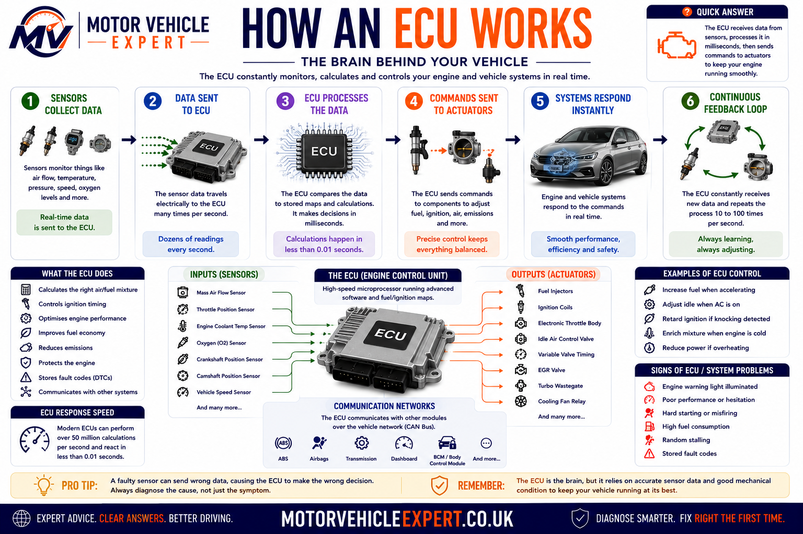
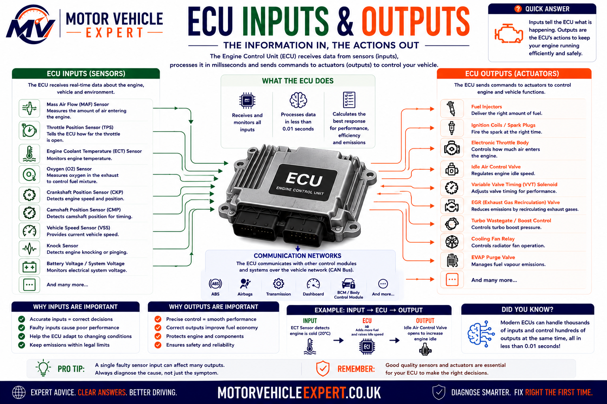
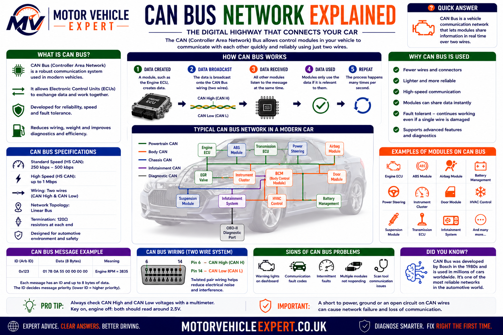
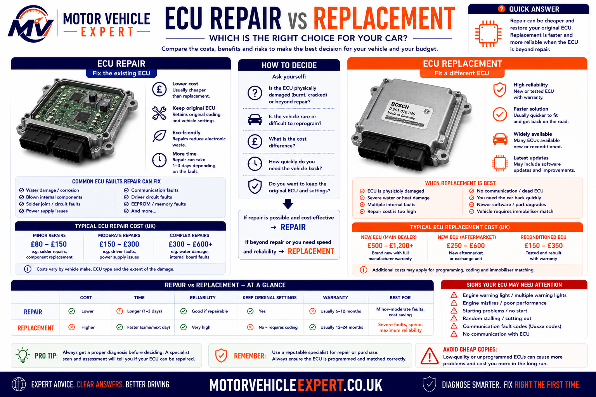

Understanding the Computer That Controls Your Car
Modern vehicles depend on electronic control units to manage systems that were once controlled mechanically. The engine ECU can calculate fuel quantity, ignition timing, throttle position, turbocharger boost and emissions-control operation many times every second.
An ECU does not work alone. It relies on accurate information from sensors, stable battery voltage, reliable earth connections, functioning actuators and communication with other modules across the vehicle network.
This is why a fault code mentioning an ECU-controlled component does not automatically prove that the component or the ECU itself has failed. Correct diagnosis requires the full circuit and operating conditions to be tested.
ECU failure is less common than faults involving batteries, wiring, connectors, sensors, actuators, power supplies or earth points. A control unit should only be condemned after these areas have been tested properly.
What Is an ECU and What Does It Do?
An ECU is an electronic control unit that receives information from vehicle sensors, processes that information using programmed software and controls electrical components called actuators.
In the engine-management system, the ECU monitors conditions such as engine speed, air flow, intake pressure, coolant temperature, throttle demand and exhaust oxygen. It then adjusts fuel injection, ignition timing, electronic throttle operation, turbo boost and emissions systems to keep the engine running efficiently.
Temperature, pressure, speed, position, oxygen and voltage data.
The ECU compares live information with programmed maps and operating limits.
Injectors, ignition coils, valves, relays, motors and warning lights.
The ECU detects abnormal signals and may store diagnostic trouble codes.
Sensors tell the ECU what is happening. The ECU decides what the vehicle needs. Actuators carry out the ECU's instructions.
Check Warning Lights, Symptoms and Fault Codes
A warning light or fault code can identify the system in which a problem has been detected, but it does not always identify the failed part. Use the Motor Vehicle Expert Diagnostic App to explore warning lights, symptoms and OBD fault codes before deciding what needs testing.
Warning Light Guidance
Understand what dashboard warning lights mean and how urgently the vehicle should be inspected.
Symptom-Based Checks
Explore possible causes of poor starting, stalling, misfires, limp mode and reduced performance.
OBD Code Support
Learn what common diagnostic trouble codes indicate and which checks should follow.
Diagnostic information should guide testing. It should not be treated as proof that an ECU, sensor or actuator needs replacing.
Why ECU Faults Are Commonly Misdiagnosed
ECU-related faults can be difficult to diagnose because a single control unit may monitor and operate dozens of different circuits. A failure elsewhere in the vehicle can therefore create symptoms that appear to point towards the ECU.
In practical diagnosis, suspected ECU faults often trace back to more ordinary causes such as a weak battery, alternator voltage problems, damaged wiring, poor earth connections, water entering a connector or a sensor signal being pulled outside its expected range.
The ECU Reports What It Sees
A control unit may store a sensor or actuator fault code because the electrical signal reaching the ECU is incorrect. The code does not prove why the signal is wrong.
Power Supply Matters
Low voltage during starting, unstable charging voltage or a voltage drop across a poor earth can cause several control modules to behave unpredictably.
Network Faults Spread
A CAN bus fault or failing module can prevent several ECUs from communicating, producing numerous warning lights and communication codes.
Replacement Requires Proof
Before an ECU is replaced, its power supplies, earths, relevant input signals, output circuits and communication lines should be verified.
Never replace an ECU solely because a generic scan-tool description says “control module fault”. Confirm the exact code, test the electrical circuit and consult vehicle-specific diagnostic information first.
What Is an ECU?
ECU usually means electronic control unit. When the discussion concerns engine management, ECU is also commonly used to mean engine control unit. It is a specialised automotive computer designed to monitor and control part of the vehicle.
The unit normally contains a processor, memory, electrical input circuits, output drivers and communication hardware. Its software is calibrated for the particular engine, transmission or vehicle system it controls.
ECU, ECM and PCM: What Is the Difference?
ECU
Electronic control unit is the broad term for a computer that controls a vehicle system.
ECM
Engine control module usually refers specifically to the module responsible for managing engine operation.
PCM
Powertrain control module may combine engine and automatic transmission control within one unit.
Manufacturers use different names, so ECU, ECM and PCM are not applied identically to every vehicle. The important point is to identify the exact module and system being discussed rather than relying only on the abbreviation.

What Is Inside an ECU?
Microprocessor
Performs calculations, follows programmed instructions and coordinates the ECU's control strategy.
Memory
Stores software, calibration maps, learned values, coding information and diagnostic records.
Input Circuits
Condition and interpret voltage, resistance, frequency and digital signals received from sensors.
Output Drivers
Switch or regulate current to injectors, coils, relays, valves, motors and other actuators.
Communication Hardware
Allows the ECU to exchange information with other modules and diagnostic equipment.
Protective Housing
Shields sensitive electronics from vibration, contamination, electromagnetic interference and temperature changes.
A modern vehicle may contain dozens of separate electronic modules. Each one has its own responsibility, although modules share information across the vehicle network.
How Engine Control Developed
Vehicle control changed gradually from largely mechanical systems to the highly integrated electronic management used today. The change was driven by tighter emissions limits, demand for better fuel economy, improved driveability and the need to control increasingly complex engines.
Carburettor Era
Fuel delivery was mainly controlled mechanically using air flow, vacuum, jets, floats and linkages.
Mechanical Injection
More precise fuel delivery became possible, but adjustment and control remained limited compared with electronic systems.
Electronic Fuel Injection
Sensors and control units allowed fuel quantity to be adjusted according to operating conditions.
Integrated Management
Modern ECUs coordinate fuel, ignition, emissions, throttle, turbocharging and communication with other modules.
Early electronic systems controlled a relatively small number of functions. A current engine ECU can evaluate hundreds of parameters, perform complex calculations and continuously adapt its strategy while the engine is running.
Why Do Modern Cars Need ECUs?
Modern engines operate across a wide range of temperatures, loads, speeds and environmental conditions. Mechanical control alone would not provide the accuracy needed for current performance, fuel economy, emissions and safety requirements.
Accurate Fuel Control
The ECU calculates when each injector should open and how long it should remain open.
Ignition Timing
Spark timing can be advanced or retarded according to speed, load, temperature, fuel quality and knock activity.
Electronic Throttle
Accelerator demand is interpreted electronically so torque can be managed smoothly and safely.
Turbo Boost
Boost pressure can be controlled through wastegate, bypass or variable-geometry turbo actuators.
Emissions Control
Lambda control, EGR, catalytic-converter monitoring, DPF regeneration and other systems depend on ECU management.
Cooling Control
Cooling fans, electric pumps and mapped thermostats can be controlled according to engine conditions.
Driveability
Idle speed, cold starting, acceleration and deceleration are managed to produce predictable engine behaviour.
Component Protection
The ECU can reduce torque or enter limp mode when conditions could damage the engine, turbocharger or emissions system.
Self-Diagnosis
Electrical signals and system performance are monitored so faults can be stored and warning lights activated.
Maximum power is not always the priority. The ECU must balance performance with emissions, fuel consumption, smoothness, reliability, temperature control and component protection.
What Types of ECU Are Fitted to a Car?
Although motorists often use “the ECU” to describe the engine computer, modern cars contain multiple electronic control units. Each module controls a particular system and communicates with other modules when information must be shared.
Engine ECU
Controls fuel injection, ignition, throttle, boost, emissions systems and many engine-protection functions.
TCU
Manages automatic gear selection, clutch pressure, shift timing and transmission protection.
ABS Control Module
Processes wheel-speed information and controls anti-lock braking, traction and stability functions.
Airbag Module
Monitors impact sensors, restraint circuits, seat information and airbag-system readiness.
Body Control Module
Coordinates central locking, lighting, wipers, windows, alarms and other body-electrical functions.
Power Steering ECU
Controls electric steering assistance using steering torque, angle and vehicle-speed information.
Hybrid Control Unit
Coordinates the combustion engine, electric motor, regenerative braking and high-voltage power flow.
Battery Management System
Monitors battery-cell voltage, temperature, current, charge balance and operating limits.
Climate Control Module
Manages heating, ventilation, air conditioning, flap motors and cabin-temperature regulation.
Instrument Cluster
Displays speed, warning lights, messages and information received from other control modules.
Immobiliser Module
Verifies authorised keys and permits or prevents engine starting through coded communication.
ADAS Control Module
Processes information from cameras, radar and other sensors for driver-assistance systems.
One module may depend on information measured by another. For example, the engine ECU, transmission controller, instrument cluster and stability-control system may all use vehicle-speed or engine-torque data.
How Does an ECU Work?
An ECU works by continuously receiving electrical information from sensors, comparing that information with programmed instructions and then controlling actuators to produce the required response. This process happens repeatedly while the ignition is switched on and can occur many times every second.
The ECU does not simply switch components on and off. It calculates how much control is required by considering several inputs together. For example, fuel-injection quantity may depend on engine speed, air flow, intake pressure, coolant temperature, oxygen-sensor feedback, accelerator demand and battery voltage at the same time.
Sensors report temperature, pressure, position, speed, oxygen content, driver demand and electrical conditions.
The ECU compares live information with programmed maps, thresholds, limits and control strategies.
Electrical commands operate injectors, coils, motors, valves, relays, warning lamps and other actuators.
Sensor feedback helps the ECU confirm whether the commanded action produced the expected result.

The Basic ECU Control Loop
A Condition Changes
The driver presses the accelerator, the engine warms up, boost pressure rises or another operating condition changes.
Sensors Detect It
One or more sensors convert the physical condition into an electrical signal that the ECU can interpret.
The ECU Calculates
Software compares the incoming signals with programmed maps and determines the required response.
Actuators Respond
The ECU changes injector timing, throttle angle, ignition, boost, valve operation or another controlled output.
Example: Accelerating Away From a Junction
When the accelerator pedal is pressed, pedal-position sensors send a demand signal to the ECU. The ECU checks engine speed, air flow, boost pressure, coolant temperature, transmission information, traction-control requests and other relevant data before deciding how much engine torque is appropriate.
The ECU may then open the electronic throttle, increase injector duration, adjust ignition timing and command additional turbo boost. On a diesel engine, it may alter rail pressure, injection timing, injection quantity, EGR operation and turbocharger vane position.
Air, Fuel and Spark
The ECU coordinates throttle opening, fuel injection and ignition timing to produce the requested torque.
Injection and Boost
The ECU controls fuel quantity, rail pressure, injection timing, turbo operation and emissions systems.
Blended Power
Control modules coordinate engine torque, electric-motor assistance, battery condition and regenerative braking.
Open-Loop and Closed-Loop Control
Open-Loop Control
The ECU calculates an output using programmed information without relying fully on immediate feedback from the controlled result. This may occur during cold starting, heavy acceleration or when a feedback sensor is not yet ready.
Closed-Loop Control
The ECU monitors the result through a sensor and continually corrects the output. Lambda control is a common example, where oxygen-sensor feedback helps refine fuel delivery.
ECU Calculations and Control Maps
ECU software contains maps, formulas and control rules that tell the processor how to respond under different operating conditions. A map can be thought of as a table containing values for different combinations of engine speed, load, temperature or other inputs.
The ECU may interpolate between stored values rather than selecting only one fixed setting. This allows fuel quantity, timing, boost and other outputs to change smoothly as operating conditions vary.
Engine Speed
Crankshaft-speed information helps determine injection timing, ignition timing and engine operating state.
Engine Load
Air flow, intake pressure, throttle position and torque demand help establish how hard the engine is working.
Temperature
Coolant, intake-air, fuel, oil and exhaust temperatures may influence starting, fuelling and component protection.
Adaptation and Self-Correction
Some ECU strategies can adapt over time. The control unit may learn small corrections for fuel delivery, idle control, throttle position or component wear. These learned values help compensate for normal variation, but they cannot permanently correct a major mechanical or electrical fault.
An ECU may compensate for a developing problem until its correction limit is reached. A vehicle can therefore appear to run normally before a warning light or driveability symptom becomes obvious.
Fault Detection and Limp Mode
While controlling the vehicle, the ECU also checks whether sensor signals and system responses are plausible. If a value is missing, outside its expected range or inconsistent with related information, the ECU may store a diagnostic trouble code.
Depending on the seriousness of the fault, the ECU may substitute a calculated value, disable the affected system or restrict engine performance. This protective operating strategy is commonly called limp mode.
Substitute Value
The ECU may use a fixed or calculated value when one sensor signal becomes unreliable.
Function Disabled
Features such as cruise control, boost control or EGR operation may be disabled until the fault is repaired.
Torque Restricted
Engine power or speed may be limited to protect the engine, transmission or emissions components.
Limp mode is the ECU's response to a detected risk. Diagnosis is still required to determine whether the cause is a sensor, actuator, wiring fault, mechanical problem, network issue or the control unit itself.
What Information Does an ECU Receive?
ECU inputs are the electrical signals that tell the control unit what is happening inside the engine, elsewhere in the vehicle and around the driver. Most inputs come from sensors, switches, other control modules or the vehicle's power supply.
Different sensors produce different signal types. Some vary voltage, some change resistance, some generate a frequency or pulse pattern and others transmit digital information across the vehicle network.
Main Engine ECU Inputs
Mass Air Flow Sensor
Measures or calculates the quantity of air entering the engine, helping the ECU determine fuel delivery and engine load.
Manifold Pressure Sensor
Measures intake-manifold pressure and helps calculate engine load, airflow and turbocharger boost conditions.
Accelerator Pedal Sensor
Reports how far the driver has pressed the accelerator on vehicles using electronic throttle control.
Throttle Position Sensor
Confirms the actual position of the throttle plate so the ECU can compare commanded and measured movement.
Crankshaft Position Sensor
Provides engine-speed and crankshaft-position information needed for injection, ignition and starting.
Camshaft Position Sensor
Helps identify engine position, cylinder phase and variable valve-timing operation.
Coolant Temperature Sensor
Reports engine temperature for cold-start enrichment, fan control, emissions strategy and overheating protection.
Intake-Air Temperature Sensor
Measures incoming air temperature so the ECU can account for changes in air density and engine operating conditions.
Oxygen or Lambda Sensor
Reports oxygen content in the exhaust so fuel delivery and catalytic-converter performance can be monitored.
Knock Sensor
Detects combustion vibration associated with knock, allowing ignition timing to be adjusted to protect the engine.
Fuel-Rail Pressure Sensor
Measures fuel pressure so the ECU can control pumps, regulators and injection accurately.
Boost Pressure Sensor
Reports turbocharger pressure so the ECU can regulate boost and detect underboost or overboost conditions.
Exhaust Temperature Sensor
Measures exhaust temperature to protect components and support systems such as DPF regeneration.
Differential Pressure Sensor
Measures pressure difference across the diesel particulate filter to estimate restriction and soot loading.
EGR Position Sensor
Confirms the actual position of the exhaust-gas recirculation valve or actuator.
Other Important Vehicle Inputs
Battery Voltage
The ECU monitors system voltage because injector, coil, motor and sensor operation can change when voltage is too low or high.
Brake Pedal Switch
Brake-pedal information may affect cruise control, torque management, starting permission and automatic transmission operation.
Clutch Pedal Switch
Clutch position may be used for starting, cruise control, idle-speed control and torque reduction during gear changes.
Vehicle Speed
Speed information may come from the ABS module and can influence idle control, cruise control, gear selection and torque limits.
Air-Conditioning Request
The climate-control system can request compressor operation, prompting the ECU to adjust idle speed and cooling-fan control.
Immobiliser Authorisation
The ECU may require a valid coded message before it permits fuel injection, ignition or engine starting.
Common Sensor Signal Types
| Signal type | How it works | Common examples | Typical diagnostic check |
|---|---|---|---|
| Variable voltage | Output voltage changes as pressure, position or another measured condition changes. | MAP, throttle position and pressure sensors | Compare scan data with a multimeter or oscilloscope reading. |
| Resistance-based | Sensor resistance changes with temperature or position and alters the circuit voltage seen by the ECU. | Coolant and intake-air temperature sensors | Check resistance or signal voltage against temperature data. |
| Frequency or pulse | The signal changes at a rate that represents speed, flow or position. | Crankshaft, camshaft and some MAF sensors | Inspect waveform shape, frequency and signal consistency. |
| Switching voltage | The signal repeatedly moves between different voltage levels according to operating conditions. | Some narrow-band oxygen sensors and switches | Confirm correct switching range and response speed. |
| Digital network data | Another control unit sends processed information over the vehicle communication network. | Vehicle speed, gear position and torque requests | Check scan-tool data, network codes and CAN bus integrity. |
Reference Voltage, Signal and Earth
Many three-wire sensors use a reference-voltage supply from the ECU, a signal wire returning to the ECU and a sensor earth. A common reference supply is approximately five volts, although the exact design varies.
If one sensor or wire shorts the shared reference circuit, several sensors may report faults at the same time. This can make the problem appear much larger than it is.
Reference Voltage
The ECU provides a stable electrical supply used by one or more sensors.
Signal Wire
The sensor returns a changing voltage or digital signal that represents the measured condition.
Sensor Earth
A clean electrical return path is essential for an accurate and stable sensor reading.
Before replacing several sensors, check whether they share the same reference-voltage supply, earth circuit, connector or wiring route.
Plausibility Checks
The ECU does not only check whether a signal is electrically present. It may also compare the value with other related sensors. This is called a plausibility or correlation check.
Pedal and Throttle Correlation
Accelerator demand should correspond with commanded and actual throttle movement within expected limits.
Crank and Cam Correlation
Crankshaft and camshaft signals must maintain the expected timing relationship.
Air Flow and Pressure
MAF, MAP, throttle position and engine speed should collectively indicate a believable engine-load condition.
Temperature Comparison
After a long cold soak, coolant and intake-air temperature readings should usually be reasonably close to ambient temperature.
Compare related readings rather than judging one sensor in isolation. A value can remain within its electrical range but still be incorrect for the actual operating conditions.
For a wider explanation of how vehicle sensors operate, see Car Sensors Explained .
What Components Does an ECU Control?
ECU outputs are the electrical commands used to operate actuators. An actuator converts an electrical command into physical action, such as opening an injector, creating an ignition spark, moving a valve, switching a relay or turning a motor.
The ECU may switch an output directly, control it through a relay, vary its duty cycle, reverse motor direction or send a command to another control module over the CAN bus.
Main Engine ECU Outputs
Fuel Injectors
The ECU controls injection timing and duration so the correct fuel quantity is delivered to each cylinder.
Ignition Coils
On petrol engines, the ECU controls coil charging and spark timing according to engine conditions.
Electronic Throttle Motor
The ECU moves the throttle plate to deliver the required engine torque while monitoring position feedback.
Turbo Actuator
Controls a wastegate, bypass valve or variable-geometry mechanism to regulate boost pressure.
Cooling Fans
The ECU may switch fan relays or request variable fan speed according to coolant temperature and air-conditioning demand.
Fuel Pump Control
The ECU can operate a fuel-pump relay or command a separate pump module to regulate supply pressure.
EGR Valve
Controls exhaust-gas recirculation according to engine load, temperature, emissions strategy and operating conditions.
VVT Solenoids
Oil-control solenoids alter camshaft timing to improve torque, efficiency and emissions.
Glow Plug System
On diesel engines, the ECU or glow-plug module controls pre-heating and post-heating according to temperature.
Purge Valve
Controls the flow of stored fuel vapour from the charcoal canister into the engine.
Swirl or Intake Flaps
Alters airflow through the intake manifold to improve combustion under different engine conditions.
Engine Warning Light
The ECU requests illumination of the engine-management light when an emissions or control-system fault meets the required conditions.
Common Output-Control Methods
On and Off Switching
The ECU switches a component or relay fully on or fully off, such as a basic fan relay or purge solenoid.
Pulse-Width Modulation
The ECU rapidly switches an output and changes the on-time to regulate valves, motors, pumps or actuators.
Module-to-Module Request
The ECU sends a digital command to another module rather than powering the component directly.
High-Side and Low-Side Switching
Depending on the circuit design, an ECU may control the positive supply side of a component or switch its earth path. These methods are often described as high-side and low-side control.
High-Side Driver
The control unit supplies or regulates the positive voltage feeding the actuator.
Low-Side Driver
The actuator receives a positive supply elsewhere and the ECU controls the path to earth.
Understanding the switching method matters during diagnosis. Measuring voltage at the wrong point or assuming every actuator is controlled in the same way can lead to an incorrect conclusion.
Output Monitoring
Many ECUs monitor their output circuits. The control unit may detect whether a circuit is open, shorted to voltage, shorted to earth or drawing an unexpected amount of current.
| Detected condition | Possible causes | Correct diagnostic direction |
|---|---|---|
| Open circuit | Disconnected plug, broken wire, failed coil or poor terminal contact | Check continuity, connector condition, component resistance and terminal fit. |
| Short to earth | Damaged insulation, internal actuator short or trapped wiring | Isolate the circuit and test resistance to earth with the correct components disconnected. |
| Short to voltage | Crossed wiring, harness damage or an external voltage entering the control circuit | Compare circuit voltage with the wiring diagram and isolate connected components. |
| Performance fault | Actuator sticking, restricted flow, low supply pressure or a mechanical system problem | Compare the ECU command with the actual physical response. |
Commanded Operation vs Actual Operation
A scan tool may show that the ECU is commanding an actuator, but that does not prove the component is physically responding. The electrical command and the mechanical result must be distinguished.
Command Present
Scan data or testing may confirm that the ECU is requesting operation and producing a control signal.
Response Missing
The actuator may still be seized, restricted, disconnected or unable to affect the system as intended.
Compare the ECU's command with the component's actual response. This helps separate an ECU-control problem from a wiring, actuator, hydraulic, pneumatic or mechanical fault.
Can an Actuator Damage an ECU?
In some circumstances, yes. A shorted injector, ignition coil, solenoid, motor or damaged wiring can overload an ECU output driver. Replacing the ECU without correcting the original circuit fault can damage the replacement unit.
Before fitting a repaired or replacement control unit, test the affected actuator and wiring for shorts, excessive current draw and poor connections. The original ECU may have failed because of an external circuit problem.
How Do ECUs Communicate Through CAN Bus?
Modern vehicles contain many electronic control units, and those modules must share information quickly and reliably. The main communication system used for this purpose is the Controller Area Network, commonly called CAN bus.
CAN bus allows multiple control units to exchange digital messages over a shared pair of wires. Instead of fitting a separate wire between every sensor, switch and module, relevant information can be transmitted across the network and used by several systems.

CAN bus works like a digital conversation between vehicle computers. Each control unit can send information, and the modules that need that information can read it.
Why Vehicles Use CAN Bus
Without network communication, modern vehicles would require far more wiring. Every module would need individual circuits for every piece of shared information, increasing weight, complexity, cost and the number of possible connection faults.
Shared Information
One signal can be transmitted digitally and used by several control modules without separate wires to each unit.
Real-Time Communication
Modules can exchange important operating information rapidly enough for engine, braking and stability systems to work together.
Network Monitoring
Diagnostic equipment can communicate with multiple modules and identify stored communication or system faults.
What Information Is Shared?
Different modules transmit information that other systems require. A vehicle-speed signal, for example, may be measured by the ABS system but used by the engine ECU, automatic transmission, instrument cluster, cruise control and power-steering system.
Vehicle Speed
Usually calculated from wheel-speed sensors and shared with the engine, transmission, dashboard and steering systems.
Engine Speed
The engine ECU can provide RPM information to the instrument cluster, transmission controller and other modules.
Engine Torque
Torque information and torque-reduction requests are exchanged between the engine, transmission and stability-control systems.
Brake Application
Brake-pedal and hydraulic-control information may be shared with the engine, transmission, cruise-control and lighting systems.
Steering Angle
Steering-angle data is used by stability control, electric steering and some driver-assistance systems.
Outside Temperature
One temperature sensor may provide information to the dashboard, climate system and other modules through the network.
Gear Position
Transmission information can be shared with the engine ECU, instrument cluster, immobiliser and parking systems.
Air-Conditioning Demand
The climate-control module can request compressor operation, cooling-fan assistance or engine idle adjustment.
Immobiliser Status
Security modules may send coded authorisation before the engine ECU permits starting or fuel injection.
Main Modules on the CAN Network
Engine ECU
Shares engine speed, temperature, torque, load and fault information with other systems.
Transmission Control Module
Exchanges gear, clutch, speed and torque information with the engine and braking systems.
ABS and Stability Module
Supplies wheel-speed information and can request engine-torque reduction during traction or stability intervention.
Airbag Module
Monitors restraint-system status and may exchange impact or vehicle-condition information with other modules.
Instrument Cluster
Receives speed, RPM, warning-light, temperature and message data from multiple control units.
Body Control Module
Coordinates lighting, locks, windows, wipers, alarm functions and other body-electrical systems.
Electric Power Steering
Uses vehicle speed, steering torque and steering-angle data to calculate the required steering assistance.
Climate Control Module
Exchanges compressor requests, fan demands and temperature information with other modules.
How CAN Bus Messages Work
CAN bus does not normally send information to one named recipient. A module broadcasts a message containing an identifier, and every connected control unit can see it. Modules are programmed to read only the messages relevant to their operation.
A Module Measures Data
The ABS module, for example, calculates vehicle speed from the wheel-speed sensors.
A Message Is Created
The module packages the information into a digital CAN message with the correct identifier.
The Message Is Broadcast
The data travels along the shared CAN wiring and becomes available to all connected modules.
Relevant Modules Use It
The engine ECU, dashboard, transmission and steering modules can read the speed information if they require it.
CAN High and CAN Low
A high-speed CAN network commonly uses two twisted wires called CAN High and CAN Low. The signal is carried by the voltage difference between the two wires rather than relying on one wire alone.
Twisting the wires helps reduce electrical interference. Because the system uses differential signalling, unwanted electrical noise affecting both wires in a similar way is less likely to corrupt the message.
CAN High
One side of the differential communication pair. Its voltage changes in relation to network activity.
CAN Low
The second side of the pair. CAN High and CAN Low move in opposite directions during data transmission.
A multimeter can help identify some obvious shorts or missing voltage conditions, but an oscilloscope is often required to inspect the actual communication waveform and signal quality.
Network Speed and Multiple CAN Networks
A vehicle may use more than one communication network. High-priority systems such as engine, transmission, ABS and stability control may operate on a faster network, while body and convenience systems may use a slower network.
A gateway module can transfer selected information between separate networks. This prevents unnecessary traffic from overloading high-priority communication systems.
Powertrain CAN
Often carries rapid engine, transmission, braking and stability-control information.
Body Network
May carry lighting, locking, climate, seating and other lower-speed body-system information.
Gateway Module
Connects separate networks and controls which messages pass between them.
What Is Network Termination?
High-speed CAN networks normally use terminating resistors at the ends of the main communication circuit. These resistors help prevent electrical signal reflections that could interfere with data transmission.
On many systems, two 120-ohm terminating resistors are connected in parallel, producing a measured resistance of approximately 60 ohms across CAN High and CAN Low when the vehicle is powered down and the network is correctly isolated for testing.
Approximately 60 ohms is common on many high-speed CAN networks, but it is not a universal rule for every diagnostic connector, network branch or vehicle design. Always use the correct wiring diagram and test procedure.
Common CAN Bus Faults
Open Circuit
A broken CAN wire or disconnected connector can isolate one or more modules from the network.
CAN High to CAN Low
Damaged insulation can allow the two communication wires to contact each other and stop normal data transmission.
Short to Power or Earth
One network wire may be pulled towards battery voltage or earth by damaged wiring or a failed module.
Corrosion or Water Entry
Moisture can increase resistance, bridge terminals or interrupt communication at a module connector.
Network Pulled Down
A faulty module can disturb the entire communication network and prevent other modules from responding.
Module Offline
A module with no power supply or earth may appear to have failed even when its internal electronics are serviceable.
Symptoms of a CAN Bus Fault
Multiple Warning Lights
ABS, steering, airbag, engine and stability lights may appear together when modules lose shared information.
No Communication
A scan tool may be unable to communicate with one module, several modules or the entire vehicle network.
Instrument Cluster Faults
Gauges, warning messages or displays may stop working because the cluster is no longer receiving valid data.
Non-Start Condition
The engine may not start if the ECU cannot receive immobiliser, crank, transmission or gateway information.
Limp Mode
The engine or transmission may enter a protective mode when required network information is missing.
Intermittent Electrical Faults
Systems may fail temporarily due to vibration, moisture, connector movement or unstable network voltage.
What Do U-Codes Mean?
OBD diagnostic trouble codes beginning with the letter U usually relate to communication or network problems. A U-code may indicate that a message was missing, implausible or not received within the expected time.
However, the module storing the code is not necessarily the module that caused the fault. It may simply be reporting that another control unit stopped communicating.
Stores the U-Code
The module notices that expected information has disappeared or become invalid.
May Be Elsewhere
The actual problem may be a failed module, blown fuse, poor earth, damaged wiring, connector fault or low battery voltage.
Several control units may all store codes relating to one missing module. The diagnostic priority is to identify which module is offline and determine whether it has power, earth and a working network connection.
CAN Bus Diagnostic Process
Check Battery Voltage
Confirm the battery and charging system are stable before interpreting widespread communication faults.
Perform a Full Scan
Identify which modules respond, which are missing and which communication codes are stored.
Check Fuses and Earths
Verify power supply and earth integrity at any module that is not communicating.
Inspect Connectors
Look for water entry, corrosion, loose terminals, damaged pins and evidence of previous repair work.
Check Network Resistance
Use the correct procedure and wiring diagram to assess termination and possible open or short circuits.
Measure Network Voltage
Check for obvious shorts to power, earth or abnormal voltage on CAN High and CAN Low.
Inspect the Waveform
An oscilloscope can show signal distortion, interference, reflections or one side of the network failing.
Isolate the Fault
Network branches or modules may need to be disconnected in a controlled sequence to identify what is pulling the network down.
CAN Bus Diagnostic Decision Table
| Diagnostic result | Likely direction | Next check |
|---|---|---|
| One module does not communicate | Local power, earth, connector, network branch or module problem | Test the missing module's supplies and communication wiring. |
| Several related modules are missing | Shared fuse, earth, gateway or network branch fault | Use the wiring diagram to identify common circuits. |
| No modules communicate | Diagnostic connector supply, gateway fault or main network failure | Check diagnostic socket power, earth and main CAN circuits. |
| Communication returns when one module is unplugged | Suspected module or its local wiring may be pulling the network down | Test wiring before condemning the disconnected module. |
| Multiple U-codes after a flat battery | Low-voltage event may have interrupted module communication | Test the battery, clear codes and confirm which faults return. |
| Fault occurs only in wet weather | Water entry, corrosion or moisture-sensitive connector | Inspect known water paths, module housings and harness plugs. |
Can a Weak Battery Cause CAN Bus Faults?
Yes. Control modules require stable voltage to start, communicate and complete their internal checks. If battery voltage falls too low during cranking, some modules may reset, go offline or store communication codes.
This is especially relevant when many unrelated warning lights appear after a flat battery, jump start or difficult cold start. The codes should not be ignored, but battery condition and charging voltage should be checked before expensive module diagnosis begins.
When many modules report communication faults at the same time, first check battery voltage, charging performance, main earth connections and shared power supplies.
Can Accessories Cause Network Problems?
Incorrectly installed alarms, trackers, radios, towbar electrics, dash cameras, immobilisers and diagnostic devices can sometimes interfere with vehicle wiring or network circuits.
Problems are more likely when wiring has been cut, twisted together, connected with poor terminals or spliced into the wrong circuit. Previous accident repair or water-damage repair can also create intermittent network faults.
CAN wiring has specific routing, twisting and connection requirements. Poor-quality repairs can introduce resistance, interference or signal reflection and may create faults that are difficult to trace.
CAN Bus and OBD-II Diagnostics
On many modern vehicles, the diagnostic socket provides access to one or more vehicle networks. A scan tool sends requests through the diagnostic connection, and the relevant control modules respond with fault codes, live data, identification details and test results.
A basic OBD-II scanner may communicate mainly with emissions-related powertrain systems. More advanced diagnostic equipment can access manufacturer-specific modules such as ABS, airbag, body control, steering, climate and transmission systems.
Limited System Access
Usually reads standard engine and emissions fault codes, basic live data and readiness information.
Multi-Module Access
Can communicate with manufacturer-specific systems and may support coding, actuator tests and network diagnosis.
For a full explanation of diagnostic sockets, scanners, fault codes and live data, see OBD-II Explained .
What Information Does an ECU Store?
An ECU uses several types of memory because not all information is handled in the same way. Some data must remain permanently stored, some is needed only while the vehicle is operating and some must be updated as the ECU learns how the engine and vehicle are behaving.
ECU memory can contain operating software, calibration maps, immobiliser information, vehicle coding, learned correction values, diagnostic trouble codes, freeze-frame records and emissions monitoring results.
Some ECU memory holds the instructions that make the vehicle work. Other memory stores temporary calculations, learned corrections and diagnostic information.
Main Types of ECU Memory
ROM
Read-only memory traditionally stores core software or fixed instructions required for the ECU to operate.
RAM
Random-access memory holds live calculations and temporary data while the ECU is powered and operating.
EEPROM
Electrically erasable memory can retain coding, learned values, identification or security information after power is removed.
Flash Memory
Flash memory stores software and calibration data that can be updated using approved programming equipment.
ROM: Core ECU Instructions
ROM stands for read-only memory. In older control units, important operating instructions were permanently stored in a memory device that could not easily be changed once manufactured.
These instructions told the processor how to interpret inputs, calculate outputs, monitor faults and communicate with other systems. Modern ECUs often use flash memory for functions that were once held in fixed ROM because flash memory can be updated more easily.
The exact memory arrangement varies by manufacturer, age and module design. The terms ROM and flash are sometimes used broadly when describing the permanent software area of an ECU.
RAM: Temporary Working Memory
RAM stands for random-access memory. It is used while the ECU is powered to hold information that must be accessed quickly during operation.
RAM may contain current sensor readings, active calculations, counters, timer values, temporary diagnostic results and data being exchanged between software functions.
Live Sensor Values
Current temperature, pressure, speed, position and voltage readings may be held temporarily while calculations are made.
Active Calculations
Injector duration, ignition timing, boost targets and other output calculations are processed continuously.
Temporary Counters
The ECU may count misfires, monitor time limits or track how long a condition has remained present.
Standard RAM normally loses its contents when the ECU loses power. This is why temporary live calculations are recreated each time the vehicle is started.
EEPROM: Retained Vehicle Information
EEPROM stands for electrically erasable programmable read-only memory. It can retain information when battery power is removed and can be rewritten when required.
Depending on the module, EEPROM may store identification, immobiliser data, coding, configuration, learned values, mileage information or other vehicle-specific records.
Immobiliser Data
Security identifiers or synchronisation data may be stored so the ECU can recognise authorised starting requests.
VIN and Module Details
Some modules retain the vehicle identification number, part number, software version and programming history.
Coding Information
Module configuration may define which equipment or features are fitted to the vehicle.
Incorrectly altering security, coding or identification data can prevent the vehicle from starting or cause modules to reject each other. Specialist equipment and reliable data backups are essential.
Flash Memory: Software and Calibration
Flash memory is commonly used to store the main ECU software and calibration data. Unlike fixed memory, it can usually be rewritten through an approved programming process.
A manufacturer may release updated software to correct known driveability problems, improve emissions operation, change diagnostic thresholds or resolve communication faults.
Operating Software
Contains the control strategies and logic the ECU follows when processing vehicle information.
Calibration Maps
Includes vehicle-specific values for fuelling, timing, torque, boost, emissions and protection strategies.
Manufacturer Updates
Software revisions may be installed to address recognised faults or improve system operation.
If battery voltage falls, communication is interrupted or the wrong software is installed while flash memory is being written, the ECU may become unresponsive and require recovery or replacement.
What Are ECU Adaptations?
Adaptations are learned correction values that allow the ECU to compensate for normal variation in components, operating conditions and gradual wear.
The ECU compares the actual result with the expected result and makes small adjustments. These values may be retained after the engine is switched off so the vehicle does not need to relearn them from the beginning on every journey.
Fuel Trim Adaptation
The ECU adjusts fuel delivery over time based on oxygen-sensor feedback and mixture correction requirements.
Throttle Adaptation
The ECU may learn the closed, open or resting position of an electronic throttle body.
Idle Adaptation
Learned corrections help maintain stable idle as engine load, deposits and component behaviour change.
Injector Correction
Some diesel systems learn cylinder-specific corrections to help balance combustion and idle quality.
EGR Adaptation
The control unit may learn valve position or flow corrections for an electronically controlled EGR system.
Shift Adaptation
A transmission controller may learn clutch filling, pressure and shift timing corrections as components wear.
Are Adaptation Values Always Beneficial?
Adaptation helps the vehicle remain smooth and efficient, but a large correction can also reveal a developing fault. The ECU may compensate for an air leak, restricted injector, contaminated throttle body or ageing sensor until the correction limit is reached.
Small Correction
Minor learned adjustments can be a normal response to component variation and operating conditions.
Large Correction
A correction close to its limit may indicate an air, fuel, sensor, mechanical or emissions-system problem.
Resetting learned values may temporarily alter symptoms, but it does not repair the cause of an abnormal correction. Record the original values before clearing them whenever possible.
When Are Adaptations Reset?
Adaptations may be reset intentionally after a repair, software update or component replacement. Some values may also be lost when a module is replaced or certain memory functions are cleared.
Disconnecting the battery does not guarantee that all adaptations will be erased. Many modern ECUs store learned values in non-volatile memory that remains intact without battery power.
| Repair or procedure | Possible reset or relearn | Why it may be required |
|---|---|---|
| Electronic throttle replacement or cleaning | Throttle adaptation or basic setting | Allows the ECU to identify the correct throttle positions. |
| Injector replacement | Injector coding or correction reset | Matches individual injector data to the correct cylinder. |
| EGR valve replacement | EGR adaptation or position relearn | Establishes the expected valve movement and flow response. |
| Automatic transmission repair | Clutch or shift adaptation reset | Allows new hydraulic or friction behaviour to be relearned. |
| ECU software update | Selected learned values or basic settings | Updated software may require systems to be recalibrated. |
| DPF replacement or professional cleaning | Ash, soot or replacement value reset | Tells the ECU that the filter condition has changed. |
What Are Learned Values?
Learned values are data the ECU develops by observing how the vehicle behaves over time. They can include corrections, reference positions, component ageing estimates and operating history.
Not every learned value represents a fault. Many are part of normal vehicle operation. However, they can be useful during diagnosis because they show how much compensation the ECU has been applying.
Long-Term Fuel Trim
Shows the longer-term fuel correction applied to maintain the required air-fuel mixture.
Misfire Learning
Some systems learn crankshaft variation so cylinder misfires can be detected more accurately.
Component Position
The ECU may learn actuator limits, resting positions or travel ranges for controlled components.
DPF Loading Estimate
Diesel ECUs calculate soot and ash loading using pressure, temperature, mileage and regeneration history.
Battery Condition
Energy-management systems may store battery age, state of charge and replacement-registration information.
Clutch Wear Values
Automated manual and dual-clutch systems may learn clutch engagement points and wear-related corrections.
Diagnostic Trouble Code Memory
When the ECU detects a fault that meets its programmed criteria, it can store a diagnostic trouble code. The stored record may include the code itself, fault status, occurrence count and information about when the problem happened.
Fault-code memory is designed to help diagnosis, but a code is not a direct instruction to replace a component. It identifies the circuit, system or operating condition in which the ECU detected a problem.
Current or Active Code
The fault is currently detected or remains active during the present operating cycle.
Stored or Historic Code
The fault occurred previously but may not be present at the time of the diagnostic scan.
Pending Code
The ECU has detected a possible fault but may require another failed monitoring cycle before confirming it.
Permanent Code
Some emissions-related codes remain recorded until the ECU confirms that the repair has passed the required monitoring conditions.
Occurrence Counter
Manufacturer-specific diagnostics may show how often a fault was recorded or how many drive cycles have passed.
Light Request
The diagnostic record may show whether the ECU requested a dashboard warning light when the fault occurred.
Save the exact code numbers, descriptions, status and supporting data before erasing memory. Clearing codes can remove valuable evidence needed to diagnose an intermittent fault.
For more detail on code structure, stored faults and correct interpretation, see Fault Codes Explained .
Freeze-Frame Data
Freeze-frame data is a snapshot of selected operating conditions recorded when a fault met the criteria for storage. It can show what the engine and vehicle were doing at the moment the problem was detected.
Engine Speed
Helps establish whether the fault occurred at idle, during acceleration or at higher engine speed.
Vehicle Speed
Shows whether the vehicle was stationary, moving slowly or travelling at road speed.
Coolant Temperature
Indicates whether the engine was cold, warming up or fully at operating temperature.
Engine Load
Helps determine whether the fault appeared under light load, cruise conditions or heavy acceleration.
Fuel Trim
May reveal whether the ECU was making a rich or lean correction when the fault occurred.
Intake Pressure
Can help assess engine load, throttle condition and turbocharger operation.
If the code was stored at high load and normal temperature, a short idle test may not reproduce it. The recorded conditions help guide a safer and more relevant road test.
Readiness Monitor Memory
Emissions-related ECUs also store readiness-monitor information. These monitors show whether the ECU has completed specific self-tests for systems such as oxygen sensors, catalytic converters, EGR and evaporative-emissions control.
Clearing fault codes or disconnecting power may reset some monitors to “not ready”. The vehicle then needs to complete suitable driving conditions before the ECU can run the tests again.
Ready
The ECU has completed the relevant monitoring routine since the last reset.
Not Ready
The required conditions have not yet occurred, or memory was recently cleared.
A used vehicle with no fault codes but several incomplete readiness monitors may have had its codes cleared shortly before inspection. This does not prove deception, but it deserves further investigation.
Coding and Configuration Memory
Coding tells a module how the vehicle is equipped or how it should behave. Two physically similar ECUs may require different coding because they are fitted to vehicles with different engines, transmissions, emissions standards, equipment or regional settings.
Equipment Configuration
The module may be coded for fitted features such as cruise control, air conditioning or automatic transmission.
Vehicle Identification
VIN or vehicle-specific identity data can be written to the replacement module.
Regional Settings
Market-specific emissions, lighting, units or legal configurations may be stored.
Transmission Type
Engine-control software may require configuration for manual, automatic or dual-clutch transmission operation.
Immobiliser Pairing
Security systems may require the engine ECU, keys and immobiliser module to share matching data.
Emissions Specification
Calibration and monitoring requirements may vary according to engine version and emissions standard.
What Happens When the Battery Is Disconnected?
Disconnecting the battery removes power from the ECU, but it does not erase every type of stored information. Temporary RAM data is lost, while software, coding and most retained memory remain stored in non-volatile memory.
The vehicle may need to relearn certain idle, throttle, window, steering-angle or transmission values after power is restored. Procedures vary significantly between manufacturers.
| Information | Usually retained after battery disconnection? | Important note |
|---|---|---|
| ECU operating software | Yes | Stored in permanent or flash memory. |
| Vehicle coding | Usually | Normally retained in non-volatile memory. |
| Immobiliser information | Usually | Battery disconnection should not normally erase key pairing. |
| Temporary live calculations | No | Recreated when the ECU powers up again. |
| Learned adaptations | Often | Depends on the system and memory design. |
| Fault codes | Often | Many modern modules retain codes without battery power. |
| Radio or convenience settings | Varies | Some vehicles may lose clock, window or infotainment settings. |
Modern modules may retain fault codes and adaptations after power is removed. Use suitable diagnostic equipment when a controlled reset or relearn is required.
Can ECU Memory Become Corrupted?
ECU data can become corrupted if programming is interrupted, the wrong software is installed, voltage becomes unstable or an internal memory device develops a fault. Water damage, overheating and electrical spikes can also affect module operation.
Interrupted Flash
Loss of voltage or communication while software is being written can leave the ECU unable to start correctly.
Wrong Calibration
Software intended for another engine or vehicle specification can cause faults or prevent operation.
Memory Device Fault
Internal electronic failure can prevent reliable reading or writing of stored data.
Repeated uncontrolled programming attempts can make recovery more difficult. Confirm battery support, communication stability, correct software identification and equipment compatibility before continuing.
ECU Memory Diagnostic Summary
Stored in ROM or flash memory and required for core ECU operation.
Held in RAM while the control unit is powered.
Retained corrections help the ECU compensate for normal variation and wear.
Stored faults, status information and freeze-frame data support accurate diagnosis.
Before resetting, updating or replacing an ECU, record fault codes, coding, software numbers, adaptations and vehicle configuration wherever the diagnostic equipment allows.
What Are ECU Fuel and Ignition Maps?
ECU maps are organised sets of calibration values that help the control unit decide how the engine should operate under different conditions. They are often described as tables because the ECU looks at inputs such as engine speed, load, temperature and driver demand before selecting or calculating the required output.
Fuel maps, ignition maps, boost maps and torque maps do not normally work in isolation. The ECU combines several maps, correction factors, safety limits and feedback strategies to produce the final command sent to injectors, ignition coils, throttle motors, turbocharger actuators and other components.
An ECU map is a set of programmed values that tells the ECU what action to take at different engine speeds, loads, temperatures and operating conditions.
How an ECU Uses a Map
Read the Inputs
The ECU checks engine speed, load, temperature, pressure, throttle demand and other relevant signals.
Locate the Operating Point
The software identifies the area of the calibration table that matches the current operating conditions.
Apply Corrections
Temperature, altitude, knock, battery voltage, emissions and protection corrections may alter the base value.
Command the Output
The ECU controls fuel quantity, ignition timing, boost pressure, throttle angle or another actuator.
What Do the Axes of an ECU Map Represent?
Many calibration tables use engine speed on one axis and engine load on another. The value stored at each operating point may represent fuel quantity, ignition advance, boost target, torque limit, injector timing or another control command.
Engine Speed
Usually measured in revolutions per minute and used to identify the engine's current speed range.
Engine Load
May be based on airflow, manifold pressure, calculated torque, throttle demand or injected fuel quantity.
Control Command
The selected value may represent fuel, timing, pressure, temperature limit or actuator position.
Two-Dimensional and Three-Dimensional Maps
Two-Dimensional Map
A 2D map or curve uses one main input against one output. An example could be a temperature-based correction that changes as coolant temperature rises.
Three-Dimensional Map
A 3D map typically uses two operating inputs, such as engine speed and load, to determine a third value such as ignition timing or fuel quantity.
Although technicians often refer to ECU maps as 2D or 3D tables, modern control software can use many additional variables, mathematical models and correction layers beyond the visible axes.
What Is a Fuel Map?
A fuel map helps determine how much fuel the engine requires under different operating conditions. The ECU may control fuel by changing injector opening time, fuel-rail pressure, injection timing or the number of injection events.
Petrol and diesel engines use different strategies, but both rely on accurate airflow, pressure, temperature and engine-speed information to calculate the required fuel delivery.
Injector Duration
The ECU changes how long the injector remains open to control the quantity of fuel delivered.
Injection Quantity
The ECU calculates the required fuel mass according to torque demand, airflow, pressure and emissions limits.
Fuel-Rail Pressure
Rail pressure may be adjusted to support efficient injection, atomisation and engine performance.
Petrol Fuel-Control Strategy
On a petrol engine, the ECU normally calculates a base injection quantity from measured or calculated airflow. It then applies corrections for temperature, battery voltage, acceleration, fuel vapour purge, lambda feedback and other conditions.
Cold-Start Enrichment
Additional fuel may be required when the engine and intake system are cold.
Acceleration Enrichment
Fuel delivery may briefly increase when throttle demand rises quickly.
Overrun Fuel Cut
Injection may be reduced or stopped when the vehicle is decelerating with the throttle closed.
Lambda Correction
Oxygen-sensor feedback allows the ECU to refine mixture control during closed-loop operation.
Full-Load Enrichment
Some engines use a richer mixture under high load for power, temperature control or component protection.
Injector Voltage Correction
Injector opening time may be adjusted when battery voltage changes actuator response speed.
Diesel Fuel-Control Strategy
A diesel ECU uses driver torque demand, engine speed, available air, boost pressure, fuel pressure, temperature and emissions limits to determine how much fuel can safely be injected.
Injecting too much fuel for the available air can increase smoke, exhaust temperature and particulate loading. The ECU therefore uses smoke-limit and torque-limit strategies as well as the main fuel quantity request.
Main Injection
Delivers the principal fuel quantity required to produce engine torque.
Pilot Injection
A small earlier injection can help reduce combustion noise and improve smoothness.
Post Injection
Additional late injection may be used during selected emissions strategies, including some DPF regeneration events.
Smoke Limiter
Restricts fuel quantity when the available airflow is insufficient for clean combustion.
Exhaust Temperature Limit
Fuel may be restricted if exhaust temperature becomes too high for the turbocharger or emissions system.
Rail-Pressure Target
The ECU adjusts target fuel pressure according to engine load, speed and injection requirements.
What Is an Ignition Map?
On a petrol engine, the ignition map determines when the spark plug should ignite the compressed air-fuel mixture. This is usually expressed as degrees before or after top dead centre.
Ignition timing must be carefully controlled. Spark that occurs too early can cause knock and excessive cylinder pressure, while spark that occurs too late can reduce power, increase fuel consumption and raise exhaust temperature.
Ignition Advance
The spark occurs earlier in the compression stroke to allow combustion pressure to develop at the correct time.
Ignition Retard
The ECU delays ignition to control knock, manage torque or protect components.
Knock Control
Knock-sensor feedback allows timing to be reduced when abnormal combustion is detected.
What Affects Ignition Timing?
Engine Speed
Higher engine speed usually changes how early combustion must begin to achieve the required pressure timing.
Engine Load
High cylinder load increases the risk of knock and may require a different timing strategy.
Intake-Air Temperature
Hotter intake air can increase knock risk, leading the ECU to reduce ignition advance.
Coolant Temperature
Engine temperature can influence starting, warm-up, emissions and protection timing.
Fuel Quality
Lower-octane fuel may cause the knock-control system to apply more ignition retard.
Boost Pressure
Increased cylinder filling on a turbocharged engine can require tighter ignition and knock control.
Knock Correction and Learned Timing
When a knock sensor detects abnormal combustion vibration, the ECU may retard ignition timing for the affected cylinder or operating area. If knock disappears, timing may gradually advance again.
Some systems also store learned knock corrections. These values can help the ECU respond more quickly when similar operating conditions occur again.
Excessive knock correction can result from poor-quality fuel, overheating, incorrect boost, carbon deposits, a lean mixture, sensor faults or genuine mechanical problems.
What Is a Boost Map?
On turbocharged engines, the ECU uses boost-control maps to determine the required intake pressure under different speed, load, temperature and torque-demand conditions.
The ECU compares requested boost with measured boost and adjusts the wastegate, boost-control solenoid or variable-geometry turbo actuator to reduce the difference.
Target Boost
The desired pressure is calculated from torque demand, engine speed and operating limits.
Actual Boost
The MAP or boost-pressure sensor reports the pressure being achieved.
Boost Correction
The ECU changes actuator duty cycle or position to bring actual boost closer to the target.
If actual pressure remains below or above the requested value, the ECU may store an underboost or overboost fault and restrict engine torque.
For detailed guides to these common turbocharger faults, see P0299 Underboost Code Explained and P0234 Overboost Code Explained .
What Is a Torque Map?
Many modern engines use torque-based control. Instead of the accelerator pedal directly commanding throttle position or fuel quantity, it represents a driver torque request.
The ECU decides how much torque can be delivered after considering traction, transmission limits, engine temperature, emissions, component protection and available airflow.
Driver Demand Map
Converts accelerator-pedal position and engine speed into a requested torque value.
Maximum Torque Limit
Restricts output according to engine, transmission, temperature or component limits.
Traction-Control Request
The ABS or stability module can request rapid torque reduction when wheel slip is detected.
Gear-Based Limit
Torque may be limited in selected gears to protect the transmission, clutch or driveline.
Temperature Limit
Output may be reduced if coolant, intake, oil or exhaust temperatures become excessive.
Emissions Limit
Fuel and boost may be restricted to keep combustion within emissions-system limits.
Temperature Compensation Maps
An engine does not require the same fuel, timing, boost and idle strategy at every temperature. The ECU therefore applies correction maps according to coolant, intake-air, fuel, oil and exhaust temperature.
Warm-Up Correction
Fuelling, idle speed and ignition may be adjusted while the engine reaches operating temperature.
Knock Protection
Boost, fuel or ignition timing may be reduced when intake-air temperature becomes excessive.
Component Protection
The ECU may reduce torque to protect the turbocharger, catalytic converter or diesel particulate filter.
Altitude and Atmospheric Pressure Compensation
Air density reduces at higher altitude. The ECU may use a barometric pressure sensor or calculate atmospheric pressure from other inputs so fuel delivery, turbo control and torque limits remain appropriate.
Without suitable compensation, the engine could run excessively rich, produce smoke or attempt to achieve a boost target that the turbocharger cannot safely deliver.
The same throttle position or boost-gauge reading does not always represent the same air mass at sea level and high altitude. The ECU must account for atmospheric conditions.
Closed-Loop Map Corrections
A base map provides the starting command, but feedback sensors allow the ECU to check whether the required result was achieved. The ECU then applies short-term and learned corrections.
Lambda Control
Oxygen-sensor data helps the ECU correct petrol fuel delivery around the target air-fuel ratio.
Boost Control
Requested and measured pressure are compared so turbo actuator control can be corrected.
Fuel-Pressure Control
The ECU adjusts pump or regulator commands according to the difference between target and actual pressure.
Throttle Control
Actual throttle position is compared with the commanded angle to confirm correct movement.
Knock Control
Ignition timing is corrected when combustion vibration exceeds the expected threshold.
EGR Flow Monitoring
Airflow, pressure or temperature changes may be used to assess whether the requested EGR flow occurred.
Base Maps, Correction Maps and Limiters
The final ECU output is rarely taken from one table. A typical calculation can begin with a base value and then pass through several corrections and limiters before the actuator command is issued.
| Calibration layer | Purpose | Example |
|---|---|---|
| Base map | Provides the initial value for the current speed and load. | Base ignition advance at 2,500 RPM and medium load. |
| Temperature correction | Adjusts the value for coolant, intake or exhaust temperature. | Reduced boost when intake air becomes excessively hot. |
| Feedback correction | Uses sensor feedback to bring actual operation closer to the target. | Short-term fuel trim based on lambda-sensor information. |
| Safety limiter | Prevents output from exceeding a programmed protection threshold. | Torque reduction during high coolant temperature. |
| Emissions limiter | Restricts operation to protect emissions performance. | Diesel smoke limiter based on available airflow. |
| Hardware limit | Keeps pressure, speed or current within component capability. | Maximum turbocharger speed or fuel-rail pressure limit. |
What Is Map Interpolation?
Engine conditions do not always match an exact row and column in a calibration table. The ECU can calculate an intermediate value between nearby map points. This process is called interpolation.
Interpolation allows outputs to change smoothly as engine speed and load move between stored calibration points rather than jumping abruptly from one value to another.
Smooth calculation between map cells helps provide progressive throttle response, stable fuelling and controlled transitions between operating conditions.
What Is ECU Remapping?
ECU remapping changes selected calibration values within the control-unit software. A remap may alter torque requests, fuel delivery, ignition timing, boost pressure, throttle response and other limits.
A professionally developed calibration should respect the mechanical capability of the engine, turbocharger, cooling system, clutch, transmission, fuel system and emissions equipment.
Increased Torque
Carefully revised boost, fuel and torque limits may increase engine output where safe capacity exists.
Throttle Response
Driver-demand maps may be adjusted to make pedal response feel sharper or more progressive.
Higher Component Stress
Increased cylinder pressure, boost, exhaust temperature or drivetrain torque can accelerate wear.
Risks of Poor ECU Calibration
Detonation or Knock
Excessive ignition advance or boost can produce damaging combustion pressure.
High Exhaust Temperature
Incorrect fuel, timing or boost calibration can overheat the turbocharger and emissions components.
Excessive Smoke
Too much fuel for the available air can increase soot, smoke and DPF loading.
Clutch or Gearbox Overload
Increased engine torque may exceed the capacity of the clutch, transmission or driveshafts.
Disabled Fault Monitoring
Poor software may suppress warning codes instead of correcting the underlying mechanical problem.
Emissions Non-Compliance
Changes that defeat emissions systems may make the vehicle unlawful for road use and create MOT or insurance problems.
Disabling fault codes, emissions monitoring or protection limits does not repair a failed sensor, blocked DPF, leaking intake, damaged turbocharger or fuel-system fault. It can allow more serious damage to develop without warning.
Can a Map Cause a Fault Code?
Yes. Incorrect calibration can cause requested and actual values to disagree, push sensors beyond plausible ranges or make emissions monitors fail. This can produce boost, mixture, fuel-pressure, airflow, knock, temperature or torque-related fault codes.
Target Is Unrealistic
The requested pressure, torque or fuel value may be beyond what the hardware can achieve safely.
Hardware Cannot Follow
A weak pump, leaking hose, worn turbo or restricted system may fail only after the calibration demands more output.
Factory Map vs Modified Map
| Area | Factory calibration | Modified calibration |
|---|---|---|
| Development priority | Balances performance, emissions, durability, fuel quality, climate and legal requirements. | Quality depends entirely on the developer, testing and intended objective. |
| Safety margins | Includes manufacturer allowances for production variation, heat, ageing and operating conditions. | May retain, reduce or exceed the original margins. |
| Component protection | Designed around the original engine and drivetrain hardware. | Must be recalibrated responsibly when output is increased. |
| Emissions compliance | Developed to meet the vehicle's approved emissions specification. | May affect compliance if emissions strategies are altered. |
| Manufacturer support | Can normally receive official software updates. | An update may overwrite the modification or create software compatibility issues. |
| Insurance disclosure | Standard vehicle specification. | Performance modifications normally need to be declared to the insurer. |
How Technicians Assess Calibration Problems
Confirm Software Identity
Check ECU part numbers, calibration numbers, software versions and programming history where available.
Compare Target and Actual Data
Assess boost, fuel pressure, airflow, torque and other commanded values against measured results.
Check Mechanical Condition
Confirm the engine, turbocharger, fuel system and sensors are capable of meeting the requested output.
Restore Known-Good Software
Where appropriate, the original or approved calibration can be installed to determine whether the fault remains.
Before diagnosing unusual boost, fuelling, torque or emissions faults, establish whether the ECU software is original. Modified calibration can change expected live-data values and fault thresholds.
Fuel and Ignition Map Diagnostic Summary
Uses speed, load, airflow, pressure and temperature to calculate the required injection quantity.
Balances torque, efficiency, combustion stability and knock protection.
Compares requested and actual boost while applying temperature and component limits.
Combines driver demand with transmission, traction, emissions and protection limits.
Always distinguish between the ECU's requested value, the actuator command and the system's actual response. A map may be correct even when a mechanical or electrical fault prevents the target from being achieved.
What Is ECU Programming?
ECU programming is the controlled process of installing, updating or configuring software and vehicle-specific data inside an electronic control unit. It may be required when a manufacturer releases revised software, when a replacement ECU is fitted or when a module must be matched to the vehicle.
Programming is not the same as simply clearing fault codes. It can change the operating software, calibration files, coding, identification data, security information or learned settings stored inside the control unit.
ECU programming changes the software or configuration stored inside a vehicle control module so it can operate correctly with the engine, transmission, security system and other electronic modules.
Why Might an ECU Need Programming?
Revised Software
Updated software may correct known driveability, emissions, starting, charging or communication problems.
New ECU Installation
A new module may arrive without vehicle-specific software, coding or security information.
Vehicle Matching
A used ECU may require specialist preparation, coding or immobiliser synchronisation before it can operate.
Coding Adjustment
The module may need to be configured for the correct engine, transmission, emissions system or fitted equipment.
Component Replacement
Injectors, throttle bodies, transmissions and emissions components may require coding or relearning after replacement.
Corrupted Module
A failed or interrupted programming attempt may require specialist recovery before the ECU can communicate again.
Main ECU Programming Operations
Rewrites the ECU operating program or calibration file.
Tells the ECU which vehicle specification and equipment it must support.
Establishes component positions, corrections or learned settings after repair.
Matches the ECU with the immobiliser, keys or security gateway.
What Is ECU Firmware?
Firmware is the embedded software that controls how the ECU operates. It contains the logic needed to read sensors, perform calculations, control actuators, monitor faults and communicate with other modules.
The firmware works together with calibration data. The firmware provides the control strategy, while the calibration contains many of the vehicle-specific values, maps, thresholds and limits used by that strategy.
Firmware
Contains the operating instructions and software routines used by the ECU processor.
Calibration
Contains maps, limits, correction values and thresholds matched to the engine and vehicle specification.
Installing software intended for a different ECU hardware version, engine or emissions specification can cause communication faults, poor running, a non-start condition or permanent module damage.
What Is Flash Programming?
Flash programming is the process of erasing and rewriting reprogrammable memory inside the ECU. The procedure may install a complete software package or update selected calibration areas.
Programming equipment communicates with the module, confirms its identity, unlocks the required memory area and transfers the new data. The ECU then verifies the written information before restarting.
Identify the ECU
Read the part number, hardware number, software version and calibration identification.
Select Correct Software
Confirm the update is approved for the exact vehicle and module specification.
Stabilise the Vehicle
Connect battery support and prevent electrical loads or communication interruptions.
Establish Communication
The diagnostic or programming tool opens a controlled session with the ECU.
Erase Memory
The relevant flash-memory areas are prepared for the new software.
Write New Data
Software and calibration files are transferred into the control unit.
Verify the Installation
Checksums or internal validation confirm that the data was written correctly.
Complete Setup
Coding, adaptations, fault clearing and final system checks are completed as required.
Switching off the ignition, disconnecting the tool, allowing the battery voltage to fall or losing network communication while memory is being written can leave the ECU unable to start or communicate.
Manufacturer Software Updates
Vehicle manufacturers may release updated ECU software after a vehicle enters production. These updates are sometimes issued through technical service information, workshop campaigns or recall-related procedures.
An update may revise control logic, diagnostic thresholds, component protection, emissions monitoring or communication with other modules. It should only be applied when it is appropriate for the vehicle and relevant to the repair.
Driveability Improvement
Updated software may address hesitation, poor idle, cold-start problems or inconsistent throttle response.
Diagnostic Improvement
Fault thresholds or monitoring logic may be revised to reduce false or misleading trouble codes.
Emissions Strategy
Updates can change EGR, DPF, catalyst, lambda or warm-up control where approved by the manufacturer.
Communication Stability
Revised software may correct intermittent CAN bus or module-wake-up problems.
Component Protection
Thermal, pressure or torque limits may be updated to improve reliability.
Replacement Compatibility
A new component may require a newer ECU software level before it can operate correctly.
Software should not be installed simply because a fault exists. Confirm the mechanical and electrical system is sound and check whether the manufacturer specifically identifies an applicable software correction.
Reprogramming, Coding and Adaptation: What Is the Difference?
| Procedure | What it changes | Common reason |
|---|---|---|
| Reprogramming or flashing | Main software or calibration stored in flash memory | Manufacturer update, module replacement or software repair |
| Coding | Vehicle configuration and fitted-equipment settings | Matching a replacement ECU to the vehicle specification |
| Adaptation | Learned positions, corrections or component values | Completing a repair or teaching a replacement component |
| Immobiliser pairing | Security authorisation between modules and keys | ECU replacement or security-system repair |
| VIN writing | Vehicle identification stored inside the module | Installing a new or prepared replacement control unit |
| Calibration reset | Selected learned values or service records | Component replacement, cleaning or controlled relearning |
What Is ECU Coding?
Coding configures the ECU for the exact vehicle in which it is installed. It may tell the module which transmission, emissions system, drivetrain, security system or optional equipment is fitted.
Coding values are usually much smaller than the main software file, but incorrect coding can still prevent systems from operating correctly or cause multiple fault codes.
Engine and Transmission
Coding may identify engine type, gearbox version, final-drive configuration or torque-control requirements.
Exhaust Equipment
The ECU may be configured for the correct catalyst, DPF, SCR, EGR or lambda-sensor arrangement.
Cruise and Speed Control
Coding can identify whether cruise control, speed limiting or related switches are fitted.
Module Communication
Configuration tells the ECU which other modules and network messages it should expect.
Regional Configuration
Settings may vary for emissions standards, fuel type, legal requirements or market equipment.
Immobiliser Type
The ECU must be configured to communicate with the correct vehicle security architecture.
Symptoms of Incorrect ECU Coding
Non-Start Condition
Security or drivetrain configuration may not match the vehicle.
Multiple Fault Codes
The ECU may look for modules, sensors or actuators that are not fitted.
Warning Lights
Engine, transmission, stability or emissions warnings may remain illuminated.
Missing Functions
Cruise control, stop-start, cooling-fan control or other features may not operate.
Communication Errors
Modules may store faults because expected messages are absent or incorrectly configured.
Incorrect Live Data
Values, units or system status may not match the actual vehicle specification.
Before changing module configuration, record or back up the existing coding wherever possible. This provides a known reference if the new configuration creates unexpected faults.
What Are ECU Adaptation Procedures?
Adaptation procedures teach the ECU how a component behaves after it has been repaired, cleaned or replaced. They can establish reference positions, flow values, pressure corrections or operating limits.
Some adaptations occur automatically during normal driving, while others require a diagnostic tool and a controlled workshop procedure.
Throttle Relearn
Teaches the ECU the electronic throttle's closed, resting and open positions.
Injector Coding
Stores individual injector correction data for the correct cylinder.
EGR Adaptation
Establishes expected valve movement or resets learned flow corrections.
DPF Replacement Reset
Updates calculated soot, ash or replacement information after approved repair work.
Clutch and Shift Relearn
Teaches clutch engagement, pressure filling and shift corrections after repair.
Actuator Calibration
Establishes the correct movement range of an electronic wastegate or variable-geometry actuator.
An adaptation may require a particular coolant temperature, battery voltage, gear position, ignition state or absence of fault codes. Starting the procedure outside those conditions can cause it to fail.
Injector Coding and Calibration Codes
Some modern injectors are individually measured during production. A correction code printed on the injector describes its flow or operating variation. That code may need to be entered into the ECU when the injector is fitted.
The ECU then applies the correction to the relevant cylinder. Incorrect coding can contribute to rough running, excessive correction values, smoke, difficult starting or combustion noise.
Identify the Injector
Confirm the code printed or marked on the replacement injector.
Confirm Cylinder Position
Establish the manufacturer's cylinder numbering before entering data.
Enter the Exact Code
Input every character accurately using compatible diagnostic equipment.
Letters and numbers can be difficult to distinguish. Entering the wrong code or assigning it to the wrong cylinder can create new running problems.
VIN Writing and Module Identification
Some replacement ECUs require the vehicle identification number to be written into the module. This helps identify the ECU during diagnostics and can support security, emissions or network functions.
The ability to write a VIN depends on the module, manufacturer and whether the ECU is new, prepared or previously used. Some modules permit one initial write only, while others require authorised programming access.
VIN Record
Links the module's stored identity to the vehicle in which it is installed.
Software Identification
Part numbers, software levels and calibration IDs help confirm compatibility.
Flash Counter
Some modules record the number or date of programming events.
Immobiliser Pairing
The immobiliser prevents unauthorised engine starting. Depending on the vehicle, the engine ECU may need to exchange matching security data with the key, body control module, instrument cluster or dedicated immobiliser unit.
A replacement ECU may communicate normally and still prevent starting if the security data does not match. Pairing or synchronisation is then required using an approved diagnostic or security procedure.
Read Security Status
Check whether the ECU recognises the key and receives start authorisation.
Confirm Module Compatibility
Verify the replacement ECU supports the correct security system and vehicle version.
Obtain Security Access
Use the required authorised login, code, token or online connection.
Complete Synchronisation
Pair the ECU with the relevant immobiliser and confirm the vehicle starts correctly.
Key, immobiliser and ECU-security procedures should only be performed by authorised technicians who have verified vehicle ownership and followed the manufacturer's security requirements.
What Is Security Access?
Manufacturers restrict sensitive programming functions to reduce theft, fraud and accidental module damage. A diagnostic tool may require a security code, online account, certificate, token or challenge-and-response process before protected functions become available.
Security Code
A PIN or calculated access code may unlock selected programming functions.
Online Authorisation
The tool may connect to an approved server to validate the vehicle, user and programming request.
Diagnostic Authentication
Modern vehicles may block coding and actuator functions until the diagnostic session is authorised.
Programming Through the Diagnostic Socket
Many ECUs can be programmed through the vehicle's diagnostic socket. This method is often called OBD programming or pass-through programming. The ECU remains installed while software is transferred across the vehicle network.
This is convenient and avoids opening the control unit, but it depends on stable battery voltage, reliable network communication and correct programming equipment.
ECU Remains Installed
Programming can be completed without removing or dismantling the module.
Network Dependent
A damaged CAN network, unstable gateway or failed ECU may prevent communication.
For a complete explanation of diagnostic sockets and vehicle communication, see OBD-II Explained .
Bench and Boot Programming
Some ECUs cannot be programmed reliably through the diagnostic socket, especially when the software is corrupted or the module no longer communicates normally. In these cases, specialist technicians may remove the ECU and connect directly to its terminals or circuit board.
Bench Programming
The ECU is powered and accessed outside the vehicle using its connector pins.
Boot-Mode Programming
Direct circuit-board access places the processor into a special recovery or programming state.
Incorrect probing, electrostatic discharge, reversed polarity, poor sealing or damage to the circuit board can permanently destroy the module. Bench and boot work should be handled by an experienced automotive electronics specialist.
Pre-Programming Checklist
Treat programming as the final stage of a confirmed repair, not the first response to an unexplained fault. Save the original module data before changing anything whenever the equipment allows.
What Is ECU Cloning?
ECU cloning is the process of copying important electronic data from an original control unit into another compatible ECU. The goal is to make the replacement module behave like the original by transferring the information required for normal vehicle operation.
Depending on the vehicle and control unit, the transferred data may include immobiliser information, VIN data, software identification, coding, calibration values and configuration settings. Some ECUs support complete cloning while others require additional programming after installation.
ECU cloning copies important information from one ECU into another so the replacement module can operate as if it were the original unit.
Why Is ECU Cloning Used?
Direct Replacement
Allows an identical replacement ECU to inherit important vehicle information.
Less Configuration
Many coding and security values may already exist within the cloned module.
Immobiliser Matching
Original security information may already match the existing keys and immobiliser system.
Vehicle Configuration
Existing equipment coding can often be retained.
Reduced Setup
Fewer manual coding procedures may be required after fitting.
Original Identity
Important identification information can remain consistent.
Typical Information That May Be Cloned
| Data | Purpose | Usually Cloned? |
|---|---|---|
| VIN | Vehicle identification | Often |
| Immobiliser data | Vehicle security | Often |
| Coding | Vehicle configuration | Often |
| Calibration | Engine operation | Sometimes |
| Software version | Operating program | Depends on ECU |
| Adaptations | Learned values | Varies |
Not every ECU supports cloning. Modern encrypted modules often require manufacturer-authorised programming or specialist electronic equipment.
What Is ECU Virginising?
Virginising removes selected vehicle-specific information from an ECU so it behaves similarly to an unused module during its next installation. After virginising, the ECU normally requires programming, coding and immobiliser pairing before it can operate in another vehicle.
Virginising does not repair a faulty ECU. It simply prepares a compatible control unit for reuse where the manufacturer or hardware design allows.
Security Data Removed
Existing immobiliser information may be cleared.
Vehicle Coding Cleared
Previous vehicle-specific settings are removed where supported.
Ready for Pairing
The ECU can then be configured for another compatible vehicle.
Some ECUs can be virginised, some require specialist electronic procedures, while others cannot legally or technically be reused in this way.
Installing a Used ECU
A used ECU may appear identical externally, but compatibility depends on far more than the connector shape. Hardware numbers, software versions, calibration levels, emissions specification, engine type and security architecture all need to be considered.
Before Installing a Used ECU
Advantages and Disadvantages
| Advantages | Disadvantages |
|---|---|
| Lower purchase cost | Unknown history |
| OEM hardware | May require coding |
| Often readily available | Possible immobiliser issues |
| Suitable donor source | Software compatibility must be confirmed |
| Can be cloned | Some ECUs cannot be reused |
Many suspected ECU failures are actually caused by poor power supplies, damaged wiring, failed sensors, water ingress or CAN communication faults. Always diagnose the entire system before replacing the control unit.
Why Battery Support Is Essential During ECU Programming
Modern ECU programming can take several minutes and, on some vehicles, considerably longer. During this period the ECU must maintain a stable supply voltage while memory is erased, rewritten and verified.
A weak battery or unstable voltage can interrupt communication, corrupt software or leave the ECU unable to complete the programming sequence.
Continuous Power
Prevents unexpected shutdown during programming.
Protects Flash Memory
Reduces the risk of corrupted software installation.
Regulated Battery Support
Professional workshops normally use regulated power supplies rather than relying solely on the vehicle battery.
Common Causes of Programming Failure
Low Battery Voltage
One of the most common causes of interrupted programming.
Loose Diagnostic Connection
Loss of communication during flashing.
Incorrect Software
Wrong calibration selected for the ECU.
Network Interruption
CAN communication failure while programming.
Power Loss
Battery disconnected or support equipment switched off.
Operator Error
Programming stopped before completion.
Interrupting power while flash memory is being written can leave the ECU in an incomplete state. Recovery may require specialist bench programming or complete module replacement.
Used when replacing compatible control units.
Prepares selected ECUs for installation in another vehicle.
Hardware, software and security must all match.
Stable voltage protects flash memory during software updates.
What Causes ECU Programming to Fail?
ECU programming can fail when power, communication, software or hardware conditions become unstable while the control unit is being erased, written or verified. The result can range from a temporary communication error to a completely unresponsive ECU.
A failed programming attempt does not automatically mean the ECU is permanently damaged. Some modules can be recovered through the diagnostic socket, while others require bench or boot-mode access by an automotive electronics specialist.
A programming failure may be caused by the ECU, the vehicle electrical system, the programming tool, the communication network or the selected software package. The cause should be identified before another programming attempt is made.
Common Causes of ECU Programming Failure
Low Battery Voltage
Voltage can fall below the ECU or programming tool's safe operating range during memory writing.
Unstable Battery Support
An unsuitable charger may produce voltage fluctuation, excessive ripple or insufficient current.
Diagnostic Connection Lost
A loose connector, damaged cable or interrupted wireless connection can stop data transfer.
CAN Bus Interruption
Network wiring faults, gateway problems or another failing module can interrupt communication with the ECU.
Incorrect Calibration
Software intended for a different engine, hardware version or emissions specification may be rejected or cause malfunction.
Wrong ECU Hardware
A replacement ECU may look identical but use a different processor, memory layout or output-driver arrangement.
Laptop or Software Failure
A crash, forced update, sleep mode or application error can interrupt the programming session.
Internet Connection Loss
Manufacturer-server programming may stop if authorisation or software transfer is interrupted.
Failing Flash Memory
Worn, corrupted or electrically damaged memory may fail to erase, write or verify correctly.
Ignition Switched Incorrectly
Changing ignition state at the wrong point can terminate the session before completion.
Modules Wake Up Unexpectedly
Opening doors, operating windows or activating equipment can increase current demand and network traffic.
Authorisation Failure
Missing credentials, expired access or incorrect security data can prevent the ECU from entering programming mode.
Symptoms of a Failed Programming Attempt
ECU Will Not Communicate
The diagnostic tool cannot establish a session with the control unit.
Engine Will Not Start
The ECU may not complete its start-up sequence or immobiliser authorisation.
Cooling Fans Run Continuously
Some vehicles enter a failsafe state when engine-control data is unavailable.
Warning Lights Remain On
Engine, transmission, ABS or stability warnings may appear due to missing communication.
Programming Tool Reports Failure
Messages may include write error, verification error, session timeout or module not responding.
Incorrect ECU Identification
The module may report incomplete, corrupt or unexpected software information.
Immobiliser Warning
Security synchronisation may have been lost or left incomplete.
Multiple Communication Codes
Other modules may record U-codes because the ECU is no longer transmitting expected messages.
Limp Mode or Limited Operation
The ECU may operate using an incomplete or fallback software state.
Programming Failure Decision Table
| Programming result | Likely situation | Recommended action |
|---|---|---|
| Programming stopped before memory erase | ECU software may remain unchanged | Correct the power or communication fault and restart using the approved procedure |
| Programming stopped during memory erase | ECU may be left without complete operating software | Attempt the manufacturer's recovery process without cycling power unless instructed |
| Programming stopped during data writing | Flash memory may contain incomplete software | Use recovery programming, bench access or specialist repair |
| Write completed but verification failed | Incorrect data, failing memory or unstable voltage | Do not release the vehicle; verify software identity and repeat only after the cause is corrected |
| ECU communicates but vehicle does not start | Coding, adaptation or immobiliser pairing may be incomplete | Check security status, configuration and post-programming procedures |
| ECU no longer communicates | Bootloader, flash memory or power supply may be affected | Verify ECU power and network conditions before specialist recovery |
Repeated restart attempts can make some recovery procedures more difficult. Follow the programming tool or manufacturer's recovery instructions before disconnecting equipment or changing the power state.
Can a Failed ECU Programming Attempt Be Recovered?
Many ECUs can be recovered after an interrupted programming event, provided the processor, power supply and memory hardware remain functional. The correct recovery method depends on how far the programming process progressed and whether the module can still communicate.
Recovery should begin with the least invasive approved method. Direct circuit-board access should only be considered when normal diagnostic or bench communication is unavailable.
Main ECU Recovery Methods
Diagnostic-Socket Recovery
The programming tool re-enters the ECU bootloader through the vehicle diagnostic connection.
Bench Recovery
The ECU is powered directly outside the vehicle and accessed through its connector terminals.
Boot-Mode Recovery
The processor is placed into a low-level programming state using direct circuit-board access.
Original File Reinstallation
A known-good original software or calibration file is restored where a valid backup exists.
EEPROM or Flash Correction
Corrupt security, configuration or software data may be repaired or rewritten by a specialist.
ECU Repair or Replacement
Failed processors, power circuits or memory chips may require electronic repair or another module.
Complete ECU Recovery Process
Preserve the Failed Session
Record the error message, programming stage, voltage and ignition state before changing anything.
Stabilise Battery Voltage
Connect suitable regulated battery support before further communication attempts.
Check ECU Supplies
Confirm permanent power, ignition power, earths, fuses and control relays.
Check Network Integrity
Inspect diagnostic communication and CAN bus resistance, voltage and continuity.
Attempt Approved Recovery
Use the manufacturer's recovery or repeat-programming function where available.
Confirm Software Identity
Select the correct file for the ECU hardware, vehicle and emissions specification.
Escalate to Bench Recovery
Remove the ECU only when normal recovery is unavailable or has failed.
Complete Final Setup
Carry out coding, security pairing, adaptations and full-system checks after recovery.
Checks Before Declaring an ECU Unrecoverable
Even when it appears unresponsive, the original unit may still contain recoverable security, coding or calibration data needed to configure a replacement ECU.
Main Dealer vs Independent ECU Programming
Main dealers and independent specialists can both provide ECU programming services, but their equipment, access methods and repair options may differ. The best choice depends on whether the vehicle needs an official software update, module coding, security work, cloning or electronic repair.
Main Dealer Programming
A main dealer normally uses manufacturer diagnostic equipment, approved online software and official vehicle records.
- Direct access to current manufacturer software
- Official VIN-based programming procedures
- Strong support for recalls and service campaigns
- Approved security and immobiliser access
- Manufacturer technical information
Independent ECU Specialist
A suitable independent may combine manufacturer-level diagnostics with bench programming, cloning and electronic repair services.
- Potentially lower labour charges
- Used and remanufactured ECU options
- Cloning and data-transfer capability
- Bench and boot-mode recovery
- Component-level ECU repair
Dealer vs Independent Comparison
| Area | Main dealer | Independent specialist |
|---|---|---|
| Official software updates | Usually direct manufacturer access | Available where licensed or through approved pass-through systems |
| New ECU programming | Strong manufacturer support | Often available with suitable equipment |
| Used ECU installation | May not support used-module reuse | More likely to offer cloning or virginising |
| ECU cloning | Rarely offered | Common specialist service |
| Circuit-board repair | Usually replaces the complete ECU | May repair internal components |
| Security access | Official manufacturer procedure | Depends on authorisation, equipment and vehicle brand |
| Warranty | Manufacturer or dealer parts warranty | Depends on the specialist and service provided |
| Typical cost | Usually higher | Often lower, especially for repair or cloning |
When a Main Dealer May Be the Better Choice
Recall or Campaign Work
The repair is covered by an official manufacturer recall or service action.
New Genuine ECU
A factory-supplied module requires online VIN-based commissioning.
Restricted Security Access
The vehicle requires manufacturer-authorised immobiliser or gateway programming.
Warranty Vehicle
The vehicle remains covered by a manufacturer warranty or approved repair policy.
Latest Technical Information
The fault requires an official software bulletin or manufacturer-guided procedure.
Complex Network Replacement
Several modules must be programmed together using factory systems.
When an Independent ECU Specialist May Be Better
ECU Cloning
Data needs to be copied from a damaged original into a compatible replacement.
Used ECU Reuse
A lower-cost donor module needs preparing and matching to the vehicle.
Programming Recovery
The ECU no longer communicates through the diagnostic socket.
Internal ECU Repair
A circuit-board, memory or output-driver fault may be repairable.
Older Vehicle Support
New manufacturer modules are unavailable or uneconomical.
Cost-Controlled Repair
A tested repair or cloned ECU may avoid the cost of a new unit.
Ask whether the provider can confirm the root cause, back up the original ECU, maintain regulated voltage, restore coding and security data, and provide a clear warranty for the completed work.
How Much Does ECU Programming Cost in the UK?
ECU programming costs vary according to the vehicle, control unit, programming method and level of security access required. A simple software update may cost much less than recovering a failed ECU, cloning a donor unit or programming several linked modules.
The prices below are broad UK guide ranges rather than fixed quotations. Main-dealer rates, specialist equipment, vehicle age, module availability and diagnostic time can all affect the final bill.
ECU Software Update
£80–£180Typical for an approved software update where the ECU communicates normally.
ECU Coding or Configuration
£80–£250May include VIN writing, variant coding and post-installation setup.
Immobiliser Pairing
£100–£300Cost depends on security access, key availability and vehicle architecture.
ECU Cloning
£150–£350Usually excludes the cost of the donor ECU and removal or refitting labour.
Virginising and Programming
£180–£450May include memory preparation, coding, security matching and adaptation.
ECU Programming Recovery
£150–£500Cost rises where bench or boot-mode access and data repair are required.
ECU Electronic Repair
£200–£600May include testing, circuit-board repair and software restoration.
Used ECU Supply and Setup
£250–£700+Price depends on donor-unit availability, compatibility and programming requirements.
New ECU Supply and Programming
£700–£2,000+Premium, performance and complex vehicles can cost considerably more.
Typical ECU Programming Cost Breakdown
| Cost item | Typical UK guide price | Usually needed when |
|---|---|---|
| Initial diagnostic assessment | £60–£150 | ECU failure has not yet been confirmed |
| Manufacturer software download | £30–£120 | Paid online access or a software subscription is required |
| Programming labour | £80–£250 | The ECU can be updated through the diagnostic socket |
| ECU removal and refitting | £60–£250 | Bench testing, cloning or internal repair is required |
| Security or immobiliser setup | £80–£250 | A replacement ECU must be authorised for the vehicle |
| Adaptation and road test | £50–£150 | Components or learned values require final setup |
| Donor ECU | £80–£500+ | A compatible used module is being cloned or prepared |
| New ECU | £400–£1,500+ | Repair or used-module reuse is unsuitable |
What Affects the Final ECU Programming Price?
Vehicle Brand
Manufacturer software access, security systems and labour rates vary significantly.
ECU Location
A difficult-to-access module can add substantial removal and refitting time.
Communication Condition
A communicating ECU is normally easier and cheaper to program than a non-responsive module.
Security Level
Online authorisation, immobiliser data and encrypted gateways can increase cost.
New or Used Module
Used ECUs may need cloning, virginising or data transfer before installation.
Programming Failure
Recovery work may require ECU removal and low-level memory access.
Linked Modules
Some vehicles require the ECU, transmission, body and security modules to be configured together.
Diagnostic Time
Proper testing is needed to confirm that programming is actually required.
Post-Programming Setup
Injector coding, throttle adaptation or transmission learning may add labour.
Check whether the price includes diagnosis, ECU removal, software access, programming, coding, immobiliser pairing, adaptations, refitting, VAT and a final road test.
Complete ECU Programming Workflow
A professional ECU programming job begins with diagnosis and ends with verification. Replacing or reprogramming the module before checking its power supply, network and connected components can waste money and damage the replacement ECU.
Confirm the Complaint
Establish the starting, running, warning-light or communication problem reported by the driver.
Complete a Full-System Scan
Record engine, transmission, body, ABS and security-system fault codes before clearing anything.
Check Technical Information
Review wiring diagrams, software bulletins and manufacturer repair procedures.
Test Battery Condition
Confirm the battery is serviceable and the charging system is not causing voltage instability.
Test ECU Power and Earth
Load-test permanent feeds, ignition feeds, earth paths, fuses and relays.
Check CAN Communication
Confirm network voltage, resistance, continuity and gateway operation.
Verify ECU Failure
Separate genuine internal ECU failure from wiring, sensor, actuator and supply faults.
Record Existing ECU Data
Save software IDs, coding, adaptations, VIN, fault codes and security information where possible.
Choose the Repair Route
Decide between updating, repairing, cloning, virginising or replacing the ECU.
Confirm Replacement Compatibility
Match hardware, software, engine, transmission, emissions and security specifications.
Connect Battery Support
Maintain stable regulated voltage throughout the programming process.
Install the Correct Software
Use an approved file matched to the vehicle identification and ECU hardware.
Code the ECU
Configure the module for the correct vehicle equipment and drivetrain.
Complete Security Pairing
Match the ECU to the immobiliser, keys and relevant security modules.
Perform Adaptations
Complete injector, throttle, EGR, turbo, DPF or transmission procedures where required.
Clear and Recheck Fault Codes
Remove historic faults and confirm that no active programming, coding or communication faults return.
Verify Live Data
Compare requested and actual values under idle and loaded operating conditions.
Complete a Road Test
Confirm starting, performance, gearbox operation, warning lights and emissions-system behaviour.
Complete a Final Scan
Check all modules after the road test for returning fault codes or communication problems.
Record the Repair
Document software versions, coding, parts fitted, adaptations and warranty information.
ECU Programming Quality-Control Checklist
Before fitting a repaired or replacement control unit, correct any shorted actuator, failed ignition coil, damaged injector wiring, reversed polarity, charging-system fault, water ingress or poor earth that may have damaged the original ECU.
ECU Programming Key Points
Power, earth, wiring, sensors, actuators and CAN bus faults can imitate ECU failure.
Hardware version, engine, transmission and emissions specification must all be compatible.
Programming should never rely on a weak battery or an unregulated charger.
Coding, security, VIN and calibration data may be needed for a replacement.
Coding, immobiliser pairing and adaptation can still be required.
Confirm the ECU communicates, the engine operates correctly and no faults return.
ECU programming should be treated as a controlled engineering procedure. Correct diagnosis, stable power, verified software and complete post-programming checks are all essential to a reliable repair.
Common ECU Faults and Why They Occur
Modern engine control units are designed to operate reliably for many years, but they work in one of the harshest environments on a vehicle. Heat, vibration, moisture, voltage spikes, poor repairs and ageing electronic components can eventually cause ECU failures.
Fortunately, genuine ECU failures remain far less common than faults involving sensors, actuators, wiring, connectors or poor power supplies. For this reason, experienced technicians always confirm that every external circuit is operating correctly before replacing an ECU.
An ECU should normally be considered the last suspect, not the first. Always prove that power supplies, earths, communication networks and connected components are healthy before condemning the control unit.
The Most Common Causes of ECU Failure
Water Ingress
Water entering the ECU housing or connector can corrode printed circuit boards, connector pins and electronic components.
Voltage Spikes
Incorrect jump starting, faulty alternators or poor battery connections can damage sensitive semiconductor components.
Heat Damage
Continuous exposure to engine-bay temperatures can accelerate electronic ageing and solder fatigue.
Vibration
Constant vibration can crack solder joints or damage delicate electronic connections inside the module.
Short Circuits
Failed injectors, ignition coils, turbo actuators or wiring can overload ECU output drivers.
Component Wear
Capacitors, voltage regulators and memory devices can deteriorate after many years of operation.
Water Damage
Water is responsible for a significant proportion of genuine ECU failures. Moisture may enter through damaged seals, blocked drainage channels, accident damage or poor mounting locations.
Corroded Pins
Increased electrical resistance causes intermittent sensor and actuator faults.
PCB Corrosion
Moisture attacks copper tracks and electronic components.
Short Circuits
Water bridges electrical circuits that should remain isolated.
A new control unit may fail in exactly the same way if moisture is allowed to return.
Output Driver Failure
Inside every ECU are power transistors called output drivers. These switch high-current devices such as injectors, ignition coils, cooling fans, EGR valves and turbo actuators.
When one of these components develops an internal short circuit, the excessive current can permanently damage the corresponding ECU driver.
Injector Driver
May fail after an injector coil develops an internal short.
Ignition Driver
Commonly damaged by faulty ignition coils.
Motor Driver
Electronic throttle bodies and turbo actuators can overload output stages if they seize electrically.
Replacing the ECU without replacing the failed actuator can destroy the replacement module immediately.
Internal Electronic Component Failures
| Component | Possible Failure | Typical Symptoms |
|---|---|---|
| Capacitors | Leakage or drying out | Random resets, intermittent starting |
| Voltage regulator | Incorrect supply voltage | ECU dead or unstable |
| Processor | Internal failure | No communication |
| Flash memory | Corruption | Programming failures |
| EEPROM | Corrupted data | Immobiliser or coding faults |
| Solder joints | Thermal cracking | Intermittent operation |
CAN Communication Faults
The ECU relies on constant communication with numerous vehicle modules. If communication is interrupted, the ECU may appear faulty even though the underlying problem lies within the CAN network.
Open Circuit
Broken CAN wiring interrupts communication.
Short Circuit
CAN High or CAN Low becomes shorted to power, earth or each other.
Failed Module
A defective control module can block the entire communication network.
Common Symptoms of ECU Failure
ECU faults can produce a wide variety of symptoms depending on which internal circuits have failed. Some faults are permanent, while others only occur under certain temperatures or driving conditions.
Engine Will Not Start
Complete loss of injector or ignition control.
Intermittent Stalling
Often associated with heat-sensitive internal faults.
Poor Performance
Incorrect sensor processing or output control.
Multiple Warning Lights
Communication or processor faults.
No Diagnostic Communication
ECU processor or power supply failure.
Limp Mode
Safety strategy triggered by serious ECU or engine faults.
Cooling Fans Running Constantly
Default failsafe operation on many vehicles.
Random Fault Codes
Processor instability or voltage issues.
Intermittent Misfire
Output driver or ignition control problems.
How Mechanics Diagnose an ECU
Professional ECU diagnosis follows a logical process. The ECU is not condemned until every supporting electrical system has been tested.
Interview Driver
Confirm symptoms and when they occur.
Battery Test
Check battery and charging system performance.
Read Fault Codes
Scan every available control module.
Check Live Data
Compare requested and actual values.
Power and Earth Tests
Load-test every ECU supply circuit.
CAN Bus Tests
Verify communication integrity.
Oscilloscope Testing
Analyse sensor and actuator waveforms.
Component Testing
Prove injectors, coils, sensors and actuators.
Software Verification
Check calibration and programming status.
Confirm ECU Failure
Only after every external cause has been eliminated.
Good technicians do not replace ECUs because fault codes mention them. They prove the ECU has failed by testing the electrical, mechanical and communication systems that support it.
Wiring, power supplies and actuators should always be tested first.
Internal electronics fail far less often than surrounding components.
Correct diagnosis prevents unnecessary ECU replacement.
Follow a logical process rather than relying on assumptions.
ECU Repair vs Replacement
Once an ECU has been confirmed as faulty, the next decision is whether it should be repaired or replaced. The correct option depends on the type of failure, vehicle age, availability of replacement modules and overall repair costs.
Many faults affecting an ECU are confined to specific electronic components such as output drivers, voltage regulators or damaged solder joints. In these cases, a specialist electronic repair may be considerably cheaper than fitting a brand-new module. However, severe water damage, processor failure or extensive circuit-board damage may make replacement the more reliable solution.

When ECU Repair Is Usually Appropriate
Failed Output Drivers
Injector, ignition or actuator driver circuits can often be replaced without changing the entire ECU.
Damaged Components
Capacitors, voltage regulators and similar components may be replaced if suitable repair methods are available.
Cracked Solder Joints
Heat cycling and vibration can crack solder connections, producing intermittent faults.
Light Corrosion
Early corrosion may sometimes be repaired if electronic damage is limited.
Corrupted Programming
Software corruption may be resolved by recovery programming without replacing the ECU.
Obsolete Vehicles
Repair may be the only practical option when replacement ECUs are no longer available.
When Replacement Is Normally Recommended
Burnt Circuit Board
Extensive PCB damage usually makes repair uneconomical.
Processor Damage
Processor failures often require complete ECU replacement.
Extensive Corrosion
Heavy corrosion affecting multiple circuits usually requires a replacement ECU.
Several Internal Faults
Numerous failed electronic components reduce repair reliability.
Crash or Fire Damage
Impact or thermal damage may destroy the ECU housing and electronics.
No Approved Repair
Some manufacturers specify replacement rather than electronic repair.
Repair or Replace?
| Situation | Repair | Replacement |
|---|---|---|
| Output driver failure | ✓ Usually suitable | Sometimes |
| Minor corrosion | Often suitable | Sometimes |
| Software corruption | Recovery programming | Rarely required |
| Processor failure | Rare | Recommended |
| Heavy water damage | Unlikely | Recommended |
| Burnt PCB | Rarely economical | Recommended |
Before fitting a repaired or replacement ECU, identify and repair the original fault that caused the damage. Short-circuited injectors, ignition coils, wiring faults, charging-system overvoltage and water leaks can quickly destroy another ECU.
Typical ECU Repair and Replacement Costs in the UK
Prices vary depending on vehicle manufacturer, ECU location, programming requirements and whether repair or replacement is the most suitable option. These are broad UK guide prices only.
ECU Diagnostic Testing
£60–£150Includes fault-code reading, live data and electrical testing.
ECU Electronic Repair
£200–£600Specialist repair of internal electronic faults.
ECU Cloning
£150–£350Transfers coding and immobiliser information where supported.
Supply and Programming
£250–£700+Genuine Replacement
£700–£2,000+High-End ECUs
£2,500+Typical UK Cost Comparison
| Repair Option | Typical Cost | Usually Suitable For |
|---|---|---|
| Software recovery | £80–£180 | Programming corruption |
| Electronic repair | £200–£600 | Internal component failure |
| Used ECU | £250–£700+ | Older vehicles |
| Brand-new ECU | £700–£2,000+ | Major internal failure |
Programming, immobiliser coding, VAT, labour and diagnostic time may be charged separately, so always request a complete quotation.
Buying a Used Car with ECU Problems
ECU faults can range from inexpensive software issues to repairs costing well over £2,000. If a seller mentions ECU problems or the engine management light is illuminated, proceed carefully until the underlying cause has been professionally diagnosed.
What to Check Before Buying
Buying Risk Guide
Software Update Required
Usually inexpensive if confirmed by diagnosis.
Suspected ECU Repair
Obtain a specialist inspection before agreeing a purchase.
ECU Replacement Needed
Costs can be substantial, particularly on premium or hybrid vehicles.
If the seller cannot explain ECU-related warning lights, refuses a diagnostic inspection or cannot provide evidence of previous repairs, it may be safer to continue searching for another vehicle.
Professional Mechanic Tips for ECU Diagnosis
Reliable ECU diagnosis depends on evidence rather than assumptions. An engine control unit may record dozens of fault codes, control hundreds of electrical functions and communicate with many other modules, but this does not mean the ECU itself is responsible every time a warning light appears.
The best diagnostic approach is to preserve the original evidence, understand the system, test the supporting circuits and confirm the fault before programming, repairing or replacing any control unit.
Test the Battery First
Low voltage can create communication faults, implausible sensor readings and multiple warning lights that imitate ECU failure.
Complete a Full-System Scan
Read every available module before clearing codes. Faults stored elsewhere may explain why the engine ECU is not operating correctly.
Save Freeze-Frame Data
Engine speed, load, temperature, voltage and fuel-trim data can reveal the operating conditions present when the fault occurred.
Load-Test Power Supplies
A circuit may show battery voltage on a multimeter but still fail when current demand increases. Test power and earth circuits under load.
Compare Requested and Actual Data
Compare target boost, rail pressure, throttle position, EGR flow and other commanded values against their measured response.
Check Reference Voltage
One shorted sensor can pull down a shared 5-volt reference and create several unrelated-looking sensor fault codes.
Inspect the ECU Connector
Look for water, corrosion, heat damage, poor terminal tension, bent pins and terminals pushed backwards into the connector.
Use an Oscilloscope
Intermittent crankshaft, camshaft, injector and CAN bus faults may not be visible with a basic code reader or multimeter.
Confirm Actuator Resistance
Test injectors, ignition coils, solenoids and motors before connecting a repaired or replacement ECU.
Check Technical Bulletins
Manufacturers may publish software updates, revised components or diagnostic procedures for known vehicle-specific faults.
Preserve the Original ECU
The original module may contain valuable software, security, coding and calibration data even when it no longer operates normally.
Verify the Complete Repair
Clear faults, complete adaptations, check live data, road-test the vehicle and perform a final full-system scan.
Common ECU Diagnostic Mistakes
| Diagnostic mistake | Why it causes problems | Better approach |
|---|---|---|
| Replacing the ECU because a fault code mentions it | Fault codes identify affected circuits, not automatically the failed component | Test wiring, sensors, actuators, power and earth first |
| Clearing codes before recording them | Valuable fault status and freeze-frame evidence is lost | Save the complete vehicle scan before clearing anything |
| Checking voltage without applying a load | High-resistance connections may appear normal with no current flowing | Load-test ECU supply and earth circuits |
| Fitting a used ECU based only on connector shape | Hardware, software, emissions and security data may not match | Verify all part numbers and programming requirements |
| Programming with a weak battery | Voltage loss may corrupt flash memory | Use regulated battery support |
| Ignoring the component that damaged the ECU | A shorted actuator may destroy the replacement unit | Correct the external cause before installation |
| Treating every communication code as an ECU fault | Network wiring, gateways and other modules may be responsible | Diagnose the complete CAN network |
| Skipping post-programming adaptations | The engine may run poorly or continue storing faults | Complete all manufacturer setup procedures |
Before condemning an ECU, confirm what information entered the module, what output the module commanded and whether the connected circuit was capable of responding correctly.
ECU Explained: Key Takeaways
It processes sensor information and controls actuators to manage engine performance, emissions, economy and protection.
Airflow, pressure, temperature, speed, oxygen and position signals allow the ECU to understand what the engine is doing.
Injectors, ignition coils, throttle motors, valves, pumps and cooling fans respond to calculated commands.
The ECU communicates with transmission, ABS, body, security and driver-assistance systems across vehicle networks.
A diagnostic trouble code identifies a monitored problem but does not automatically prove that the ECU has failed.
Flash programming, coding, security pairing and adaptations may all be needed after ECU replacement.
Wiring, connectors, sensors, actuators, poor earths and unstable voltage should always be checked first.
Output drivers, solder joints, memory faults and selected electronic components may be repairable.
Hardware number, software version, engine, transmission, emissions system and immobiliser architecture must match.
A reliable ECU repair includes root-cause diagnosis, programming, adaptations, road testing and a final vehicle scan.
The ECU is the central electronic decision-maker for the engine, but it depends completely on accurate sensors, healthy wiring, reliable power supplies, functioning actuators and communication with other vehicle modules.
Related Car Diagnostic Guides
Continue learning how modern vehicle electronics, fault codes and warning systems work with these carefully selected Motor Vehicle Expert diagnostic guides.
Essential Diagnostic Guides
Start with these cornerstone guides to understand the complete diagnostic process and how the ECU communicates with the rest of the vehicle.
Car Diagnostics Explained
Learn how professional technicians move from an initial symptom to fault confirmation using visual checks, scan data, electrical testing and verification after repair.
Read Car Diagnostics Guide →Fault Codes Explained
Understand how diagnostic trouble codes are created, what the letters and numbers mean and why a stored code does not automatically identify the failed component.
Learn About Fault Codes →OBD-II Explained
Discover how scan tools communicate with a vehicle through the OBD-II port and access fault codes, live data, readiness monitors and freeze-frame information.
Read OBD-II Guide →Engine Management Light Guide
Learn the difference between a steady and flashing engine warning light, what each condition can mean and when the vehicle should be stopped.
Understand the Engine Light →A warning light or fault code should be treated as the beginning of the diagnostic process, not proof that a particular sensor, actuator or ECU has failed. Always compare stored codes with live data, wiring checks and the vehicle’s actual symptoms.
Fault Code and Troubleshooting Resources
Explore practical fault-code guides and broader diagnostic resources for investigating engine performance and electronic control problems.
P0299 Fault Code
Diagnose low boost pressure, air leaks, actuator problems, vacuum faults and turbocharger control issues.
Read P0299 Guide →P0234 Fault Code
Understand excessive boost pressure, sticking turbo controls, sensor errors and common causes of overboost protection.
Read P0234 Guide →Car Diagnostics Hub
Browse Motor Vehicle Expert guides covering diagnostic procedures, warning lights, fault codes and common vehicle symptoms.
Visit Diagnostics Hub →Warning Lights Hub
Find clear explanations of dashboard warning lights, severity levels and the most appropriate next diagnostic step.
Browse Warning Light Guides →Use the Motor Vehicle Expert Diagnostic App to work through warning lights, fault codes and vehicle symptoms in a structured order before replacing expensive parts.
ECU Frequently Asked Questions
Engine Control Units are often blamed for warning lights, starting problems and unexplained electrical faults, but genuine internal ECU failure is less common than many motorists assume. These answers explain how ECUs work, how faults are diagnosed, when repair or programming may be required and what replacement can cost in the UK.
An ECU should not be condemned from a fault code or warning light alone. Low battery voltage, poor earth connections, damaged wiring, corroded connectors, faulty sensors and CAN Bus communication faults can all produce symptoms that resemble ECU failure.
A proper diagnosis should confirm ECU power supplies, earth circuits, network communication, sensor inputs and actuator outputs before an expensive control module is repaired or replaced.
What does ECU mean in a car?
ECU usually means Electronic Control Unit. Modern vehicles contain numerous ECUs controlling systems such as the engine, transmission, airbags, braking, body electronics and climate control.
When motorists refer to “the ECU”, they normally mean the engine management computer. It processes information from sensors and controls fuel injection, ignition timing, turbo boost, emissions equipment, cooling fans and other engine functions.
Is the ECU the same as the engine computer?
Yes. ECU, engine computer and Engine Control Module are commonly used to describe the electronic module responsible for managing engine operation.
Manufacturers may use different terminology, including ECM, PCM, DME or engine management module. Although the names differ, they generally refer to a computer that receives sensor data and controls engine-related actuators.
What is the difference between an ECU, ECM and PCM?
ECU is a broad term meaning Electronic Control Unit. It can describe almost any electronic module fitted to a vehicle.
ECM normally means Engine Control Module and focuses primarily on engine management. PCM means Powertrain Control Module and may control both the engine and automatic transmission within one unit.
The exact terminology depends on the vehicle manufacturer and system design.
What does an ECU control?
Depending on the vehicle, the engine ECU may control fuel injection, ignition timing, electronic throttle operation, turbocharger boost, fuel pressure, variable valve timing and cooling-fan operation.
It may also manage EGR flow, oxygen-sensor corrections, catalytic converter monitoring, diesel glow plugs, DPF regeneration and other emissions-related functions.
The ECU continuously adjusts these systems using information received from sensors around the engine and vehicle.
What are the symptoms of a faulty ECU?
Possible symptoms include non-starting, intermittent stalling, unexplained warning lights, loss of diagnostic communication, inconsistent engine operation and cooling fans running continuously.
Other signs may include injectors or ignition coils not being activated, repeated output-circuit fault codes, incorrect sensor readings or a vehicle entering reduced-power mode.
These symptoms do not prove the ECU is faulty. Wiring, sensor, actuator, battery and earth faults can create very similar problems.
Can a faulty ECU cause a car not to start?
Yes. A failed ECU may prevent fuel injectors, ignition coils, the fuel pump or other essential starting systems from operating correctly.
It may also fail to communicate with the immobiliser system, preventing security authorisation and stopping the engine from starting.
Battery condition, starter operation, crankshaft sensor signals, wiring, fuses, relays and immobiliser faults should be tested before the ECU is blamed.
Can an ECU fail without storing a fault code?
Yes. If the ECU loses its main power supply, earth connection or internal processor function, it may be unable to store or report a diagnostic trouble code.
Internal voltage-regulator faults, memory failure and complete communication loss may also leave no readable code.
In these situations, technicians may need to test power, earth and CAN Bus circuits directly rather than relying only on a diagnostic scan.
Can a diagnostic fault code prove the ECU is faulty?
No. A diagnostic trouble code identifies a circuit, system or operating condition that the ECU has detected as abnormal.
The underlying cause may be a failed sensor, damaged actuator, corroded connector, broken wire, poor earth connection, low voltage or communication problem.
Even codes containing phrases such as “control module” or “internal fault” should be supported by electrical testing and manufacturer diagnostic procedures before the ECU is replaced.
Can an ECU be repaired?
Many ECUs can be repaired by a specialist electronics company. Repairable faults may include failed output drivers, damaged voltage regulators, poor solder joints, memory corruption and limited circuit-board damage.
Water ingress and corrosion may also be repairable when the damage is found early. Severe burning, extensive corrosion or processor failure may make replacement more practical.
The ECU should be professionally tested before repair so the specialist can confirm whether an internal fault is actually present.
Can a second-hand ECU be fitted to another car?
Sometimes, but a used ECU cannot always be fitted and used immediately. The replacement must have compatible hardware, software and part numbers.
It may require cloning, virginising, VIN coding, immobiliser pairing and vehicle-specific software configuration before the engine will start and operate correctly.
A cheaper used module can become expensive if it is incompatible or cannot be programmed to the vehicle.
What is ECU cloning?
ECU cloning involves transferring important information from the original control unit into a compatible replacement module.
The transferred information may include operating software, calibration data, vehicle coding, VIN information and immobiliser security data.
When cloning is completed successfully, the replacement ECU may behave like the original unit without requiring every setting to be programmed individually.
Does disconnecting the battery reset the ECU?
Disconnecting the battery may clear temporary memory, learned fuel corrections and some adaptation values, depending on the vehicle.
It normally does not erase the ECU operating software, VIN, security coding or immobiliser information.
After reconnection, the vehicle may need to relearn idle control, throttle position, window settings or other adaptations. Battery disconnection should therefore follow the manufacturer’s procedure.
Can a weak battery cause ECU problems?
Yes. Low or unstable battery voltage can cause communication errors, false fault codes, failed starting attempts and unexpected warning lights.
Voltage may fall particularly low while the starter motor is operating, causing control modules to reset or temporarily stop communicating.
Battery condition, charging voltage and voltage drop should be checked early in the diagnostic process, especially when several unrelated electronic faults appear at the same time.
Can jump starting damage an ECU?
Incorrect jump-starting procedures can damage an ECU and other electronic modules. Reversed polarity, unstable connections and excessive voltage spikes create the greatest risk.
Jump leads or a booster pack should be connected in accordance with the vehicle manufacturer’s instructions. Some vehicles provide dedicated jump-starting terminals away from the battery.
If the vehicle behaves abnormally after a jump start, the battery, charging system, fuses and module communication should be checked.
How much does an ECU repair cost in the UK?
Specialist electronic ECU repair commonly costs approximately £200–£600, although prices vary according to the vehicle, module type and internal fault.
Diagnostic testing, ECU removal, delivery, refitting and programming may be charged separately. Water-damaged or badly burnt modules may cost more to repair or may be considered beyond economical repair.
Obtain a written quotation confirming what is included and whether the repair carries a warranty.
How much does a replacement ECU cost?
A used ECU supplied and programmed may cost approximately £250–£700 or more, depending on availability and compatibility.
A new genuine ECU may cost around £700–£2,000, with some premium, performance, hybrid and specialist vehicles costing considerably more.
The total price may also include diagnosis, module removal, software installation, coding, immobiliser pairing and adaptation procedures.
Does a replacement ECU need programming?
Usually, yes. A replacement ECU normally needs the correct operating software and vehicle configuration before it can function properly.
Programming may include VIN writing, immobiliser pairing, injector coding, throttle adaptation and configuration of optional equipment.
Some cloned ECUs may already contain the required information, but the installation should still be checked with suitable diagnostic equipment.
Can ECU programming fail?
Yes. Programming can fail if battery voltage drops, diagnostic communication is interrupted or incorrect software is installed.
Network faults, damaged wiring, unstable internet connections and failing ECU memory can also interrupt the process.
A regulated battery-support unit should normally be used during programming. Some interrupted ECUs can be recovered by an experienced specialist, while others may require bench programming or replacement.
Does remapping damage the ECU?
Correctly completed calibration work should not physically damage a healthy ECU. However, the process does involve rewriting part of the ECU software.
Interrupted flashing, unsuitable files or poor-quality equipment can corrupt the software and leave the vehicle unable to start.
Aggressive calibration changes may also increase turbocharger, engine, clutch, transmission and emissions-system stress. Any modification should be carried out by a reputable specialist who understands the vehicle’s mechanical limits.
Should I buy a used car with an ECU warning?
Only after an independent diagnostic inspection confirms the cause of the warning and the likely repair cost.
An apparent ECU warning may be caused by a minor sensor or wiring problem, but it may also indicate water damage, network failure, previous poor-quality repairs or a control module requiring expensive replacement and programming.
Do not rely on the seller clearing fault codes before a test drive. Scan the vehicle again after it has been driven and inspect the available fault-code, freeze-frame and readiness-monitor information.
Use the Motor Vehicle Expert Diagnostic App to investigate warning lights, fault codes and engine symptoms before replacing expensive electronic components. A structured diagnostic process can often identify the real cause and prevent unnecessary ECU replacement.
Motor Vehicle Expert publishes practical UK-focused vehicle diagnostics, maintenance, MOT and used car guidance based on common driver symptoms, dashboard warning lights and real-world repair questions.